A design for writing layout algorithms as GoFish code, on the smallest set
of layout primitives that covers them. Every d3 layout is checked against
it. today marks a real render on today's
public API. sketch marks proposed syntax
that does not run yet.
This tab has two parts. The first part shows what is open now: the GoTree
polar stories checked against the GoTree gallery, then four layout
questions, each with real renders, the code that drew them, and a
recommendation where there is one. The second part shows what has been
decided and built on the branch. Every picture is a render of the code
under it, made on the branch today unless its caption says otherwise.
Open now
The layout protocol prototype is on the next tab. It defines
spread, stack, tile and user
layouts with one public call, defineLayout, and has three
forks of its own.
GoTree polar stories against the GoTree gallery
Each card puts one GoTree story beside the picture in the GoTree gallery
that it ports (BIT-VIS/gotree,
gallery/<Name>/tree.png). Changed stories show three
panels: the reference, the branch before this round (38a79eac3), and the
branch now. The cause of each difference is one of four kinds.
(a) The port's spec was wrong. (b) The engine has a bug.
(c) GoFish cannot write it yet. (d) Cosmetic, such as
different data. The first round found no engine bug. The second round, on
the coordinate systems, found one, shown on the icicle card.
Each gallery story now uses the coordinate system its reference uses. A
port never turns a cartesian picture into a polar one or a polar picture
into a cartesian one. This is the maintainer's rule: "in general yeah we
shouldn't convert between cartesian and polar with the gallery examples."
The table checks every gallery story against its picture. The picture
decides, not the dsl.json, because the icicle and deep tree
folders hold a copy of the sunburst's polar dsl.json under
cartesian pictures. Three stories broke the rule. Their cards show the
reference, the branch before this round (11ecb7c9d), and the branch now.
(a) The port put a whole ring's thickness of space between a
parent and its children, which drew the white rings. The dsl's margin
is zero. The reference also uses real, uneven data (d), and the port
keeps its balanced tree.
Old code
{{code:gt-sunburst-old}}
New code
{{code:gt-sunburst-new}}
Icicle plot fixed, now cartesian
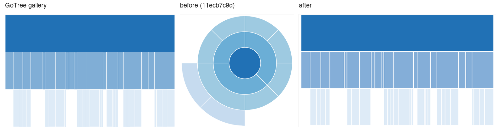
The story now draws the cartesian icicle in the reference. Before,
it drew a polar icicle, the same picture as the sunburst.
(a) The reference is a cartesian icicle, and its
dsl.json is a byte copy of the sunburst's, so the story
had followed the copy. The story is now cartesian. The root is one
band across the top, its 19 children sit in the band below, and their
leaves in the band below that. Each leaf is as wide as its value, read
off the reference. The file is renamed from
IciclePlotPolar.stories.tsx to
IciclePlot.stories.tsx, and its gallery title from
"GoTree: Polar Icicle" to "GoTree: Icicle Plot". Nothing referred to
the old id. The node-link IciclePlot story is not a gallery story and
stays as it is.
(b) The bands are pixels, not h: datum(1). With a
data height, a parent at depth 1 is drawn below its own children while
the root stays above its children. The four-node repro is below the
new code.
Old code
{{code:gt2-icicle-old}}
New code
{{code:gt2-icicle-new}}
Engine bug repro
{{code:gt2-icicle-bug}}
Nested pie tree fixed, now polar
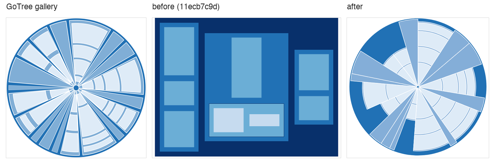
The story now draws a polar nested pie. Before, it drew nested
rectangles.
(a) The reference is polar, and the story was a cartesian
treemap. The story now alternates the two GoTree templates by depth
under Coord.clock(). The root's children split the angle
by value, and their children split the radius by value. A node is
sized only along the axis its parent splits, so a wedge with no
children runs from the hub to the rim. Nothing is sized in radians.
The data is read off the reference: 19 wedges, ten of them split into
two to four bands.
(c) Two things still differ. First, GoTree fills every wedge to
the rim and splits it by value inside. Here the bands of all wedges
share one radial scale, so a wedge whose bands add up to less stops
short of the rim. Second, the reference has gaps between siblings
measured in data units. A gap inside a coord can only be pixels or
fr, which warns beside data weights, and a percent is
#1238. So the wedges touch, and a white stroke parts them. The story
stays in the gallery. It is clearly the reference's kind of picture,
and its gallery description now says polar.
Old code
{{code:gt2-npt-old}}
New code
{{code:gt2-npt-new}}
Deep tree fixed, now cartesian
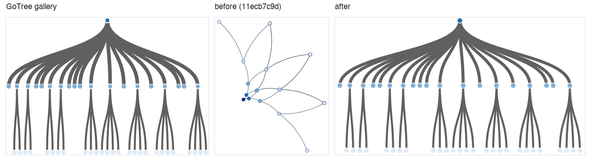
The story now draws the cartesian tree in the reference.
(a) Like the icicle, the reference is cartesian and its
dsl.json is a copy of the sunburst's. The story had drawn
a polar binary tree with hand-set pitches in radians. It is now a
top-down tree with the reference's 19 children and their leaves,
bezier links, and thicker links out of the root (the dsl's LinkWidth
by depth). It is not a gallery story.
Old code
{{code:gt2-deep-old}}
New code
{{code:gt2-deep-new}}
Hierarchical sector chart fixed
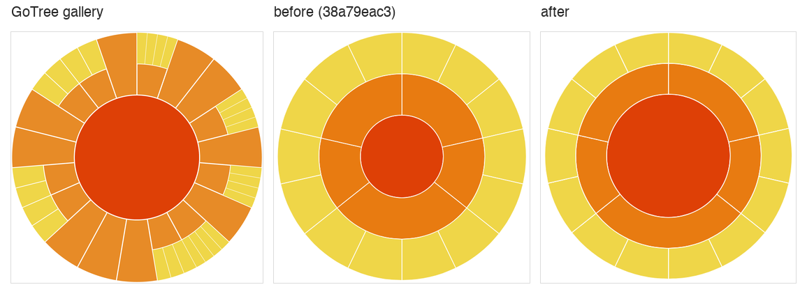
The root disc is now twice a ring's thickness.
(a) Every ring had the same thickness in pixels, and siblings
were centered. In GoTree a parent is as thick as its child group, so
the root is two rings thick here. The reference's tree also has some
leaves at depth 1 (d).
Old code
{{code:gt-hsc-old}}
New code
{{code:gt-hsc-new}}
Tyre tree fixed
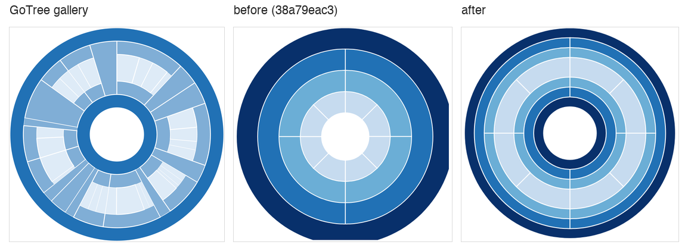
The root now shows at the rim and around the hub, and nothing is
clipped.
(a) The port aligned each child group at the parent's inner
edge, so the root showed only at the rim. GoTree's "within" centers
it. The bands were also pixels that needed 224 px of room in a canvas
with 187.5 px. They are weights now, so they fit.
Old code
{{code:gt-tyre-old}}
New code
{{code:gt-tyre-new}}
Clock tree fixed
Wedges hang from the rim, and the root is just before 12.
(a) Three rules were off. Bottom-up layout puts a parent after
its children, a wedge's length is its reverse depth, not its height,
and the dsl aligns every wedge at the rim, not at the middle of the
band.
Old code
{{code:gt-clock-old}}
New code
{{code:gt-clock-new}}
Clock tree with link
wedges fixed, links differ
The wedges follow the clock tree's rule. The links do not match.
The wedges were (a), the same three rules as the clock tree.
The links are (c). The reference draws straight step links
across the hollow center in screen space. A link inside a coord is
drawn in the coord's space, so it bends with the circle.
To match, a link needs a route that is drawn in screen space while its
ends stay on marks placed in the polar space.
Old code
{{code:gt-ctwl-old}}
New code
{{code:gt-ctwl-new}}
Sector tree fixed
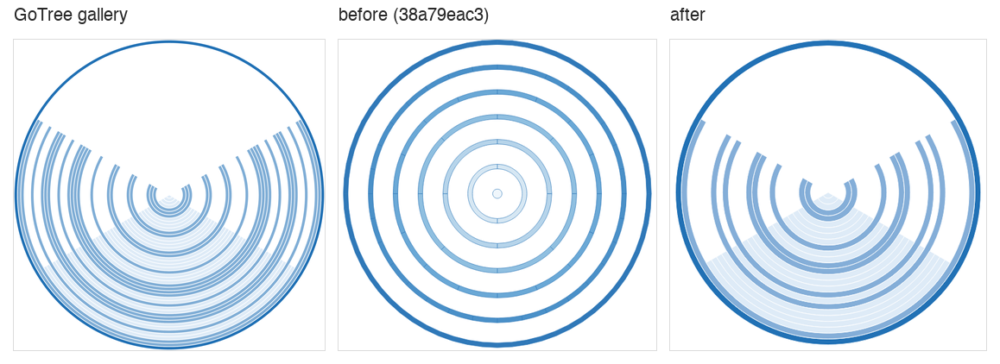
Arcs centered on 6 o'clock, the root the outer circle.
(a) The dsl sets PolarAxis: x-axis, which puts the
layout's X on the radius and its Y on the angle. The port drew a
sunburst instead. GoFish's polar always reads x as θ, but the swap is
still easy to write: the X relations go on y and the Y
relations on x. The reference has more nodes (d).
Old code
{{code:gt-sector-old}}
New code
{{code:gt-sector-new}}
Sector tree 2 fixed
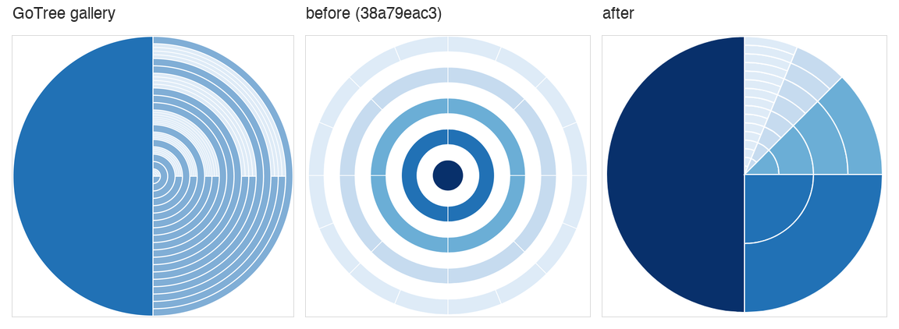
The root is the left half, and the leaves split the radius.
(a) The same axis swap as the sector tree. The levels run
around the angle and the leaves along the radius. The reference's tree
is three levels deep with uneven fan-out, and the port keeps a
balanced tree four levels deep, so it has one more angular slot (d).
Old code
{{code:gt-sector2-old}}
New code
{{code:gt-sector2-new}}
Tornado trees still differ
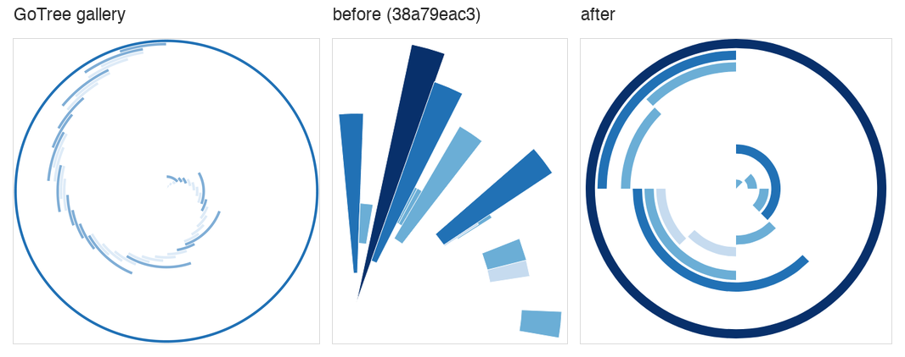
Tornado tree. The root is the outer circle.
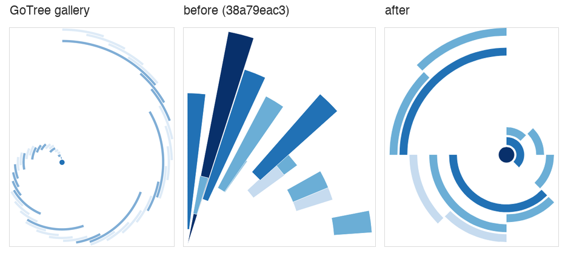
Tornado tree 2. The root is the dot at the center.
The axes were (a). Both use PolarAxis: x-axis,
which the port had ignored, and placed nodes by hand-set pitches with
the emX flag. The rewrite uses the swap and has no flags
or hand numbers. What is left is (c). The dsl overlaps each
sibling with the one before it by 46% of its length (Margin -0.46), which winds the spiral tighter.
To match, a gap needs to be writable as a negative share of the
children's own size. A box gap today is pixels, a percent of the room,
or a non-negative fr.
Old code
{{code:gt-tornado-old}}
New code
{{code:gt-tornado-new}}
Violin tree still differs
The root wedge reaches from the center to the rim just after 12,
and the rest spiral inward.
The order was (a). The port placed nodes by pitches with
emX, and its parents were centered over their children
instead of after them. The rewrite gives each node its own slot,
parent after children, counter-clockwise from 12. The steps are wider
than the reference's for the same reason as the tornado trees,
(c), and the port's tree is smaller (d).
To match, the same negative gap as the tornado trees.
Old code
{{code:gt-violin-old}}
New code
{{code:gt-violin-new}}
Side tree and spiral layout still differ
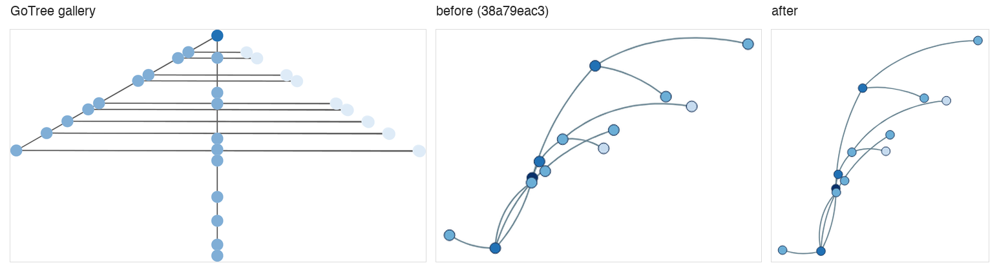
Side tree.Spiral layout.
In both references the first branch starts at the start angle, so the
root's chain now writes ends: [0, 1]. That is the only
change. The rest is (a) and (c). These stories place
circles by hand-set pitches in radians, and their links bend with the
circle, while the references draw straight links. A circle node gets
no angular room from the tree, which is the gap GALLERY.md lists
first.
To match, point nodes need angular room by leaf count, and links need
a straight route in screen space.
Old code
{{code:gt-ends-old}}
New code
{{code:gt-ends-new}}
Node-link sunburst and nested pie tree
cleaned up
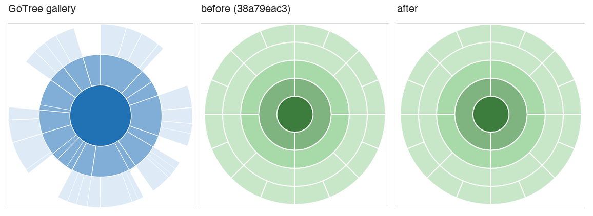
Sunburst. The normalized DOM is unchanged.
Nested pie tree. The ring now closes and fills the canvas.
Both stories sized wedges by hand in radians, and the sunburst also
set emX. They now give weights, which the coord fits. The
sunburst draws the same picture. The nested pie tree's hand sizes
added up to more than a full turn, so it had a seam at 12; now it
closes. Neither is a port of one gallery picture: the gallery's
NestedPieTree has many more leaves and alternates slice and dice by
depth (d).
Old code
{{code:gt-nl-old}}
New code
{{code:gt-nl-new}}
Stories not changed in this round
The reference beside the branch, with the main difference in each
caption.
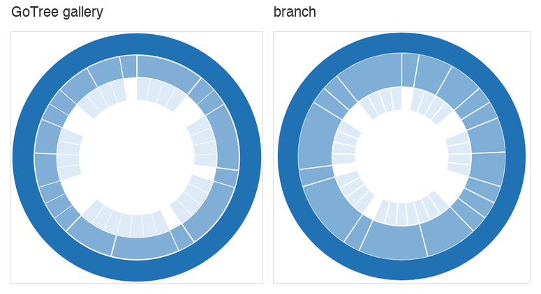
Outside-in tree. Matches; the data differs (d).
Multilevel silhouette tree. Close. A gap runs between the root
disc and the first ring, and the links bend (c).
Radial tree. Close; the links bend (c).
Radial tree incline. Close; the links bend (c).
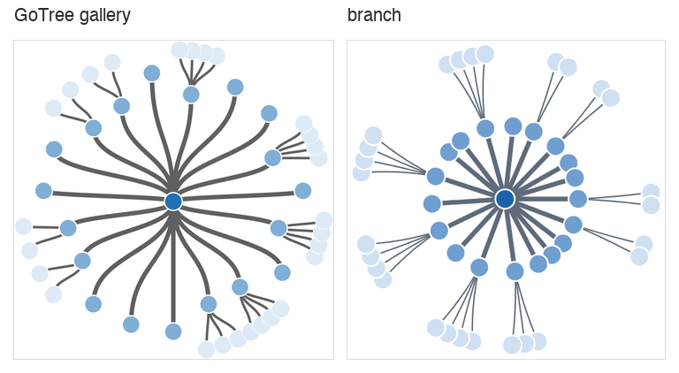
Radial deep. Close; curved links are drawn straight (c).
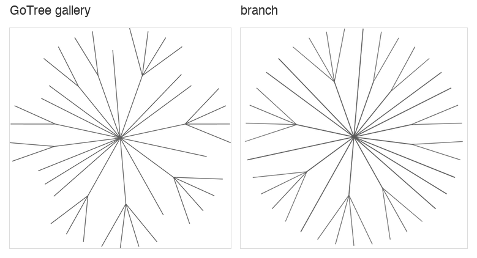
Radial phylogenetic tree. Close.
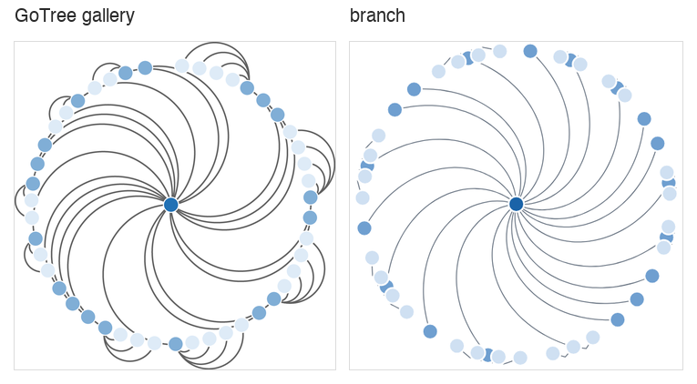
Rotation tree. Close; the arc links are approximated (c).
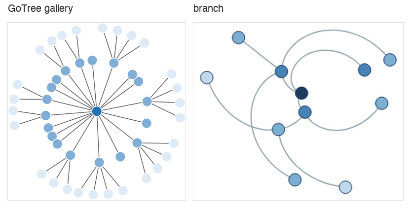
Node-link radial nodes. Does not match. Every level uses the same
pitch, a third of a turn, so the fans wrap around (a).
Flower tree. Does not match. Circles nest on one axis, which a
circle cannot do (c).
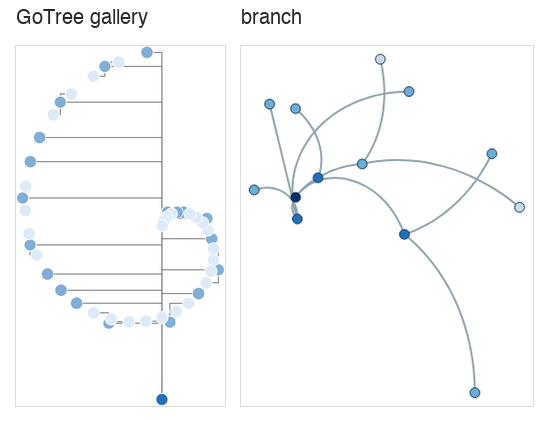
Oak tree. Does not match. It needs the axis swap and straight step
links (a, c).
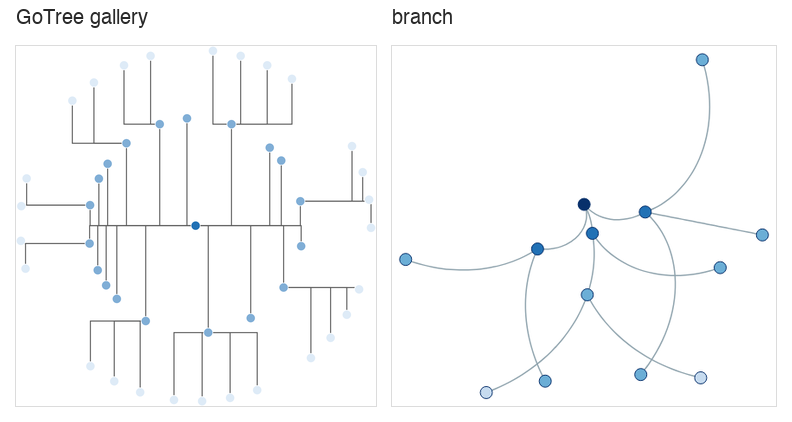
Orthogonal grid embedding. Does not match; orthogonal links are
drawn straight (c).
Layout questions
1. Slack in a spread of a stated size
prototype
Slack is the spare room that minimum gaps leave, and a slack
rule says where the parts go within it. The picture has three boxes 30
px wide, gaps of at least 10 px, and a spread 400 px wide. The boxes
and gaps need 110 px, so 290 px are spare. Today the spare room stays
empty on the right whatever the slack rule says, because the solver
does not read the spread's own width as a bound.
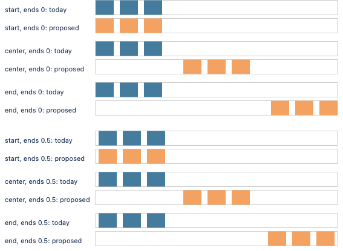
Blue rows are what the library draws today. Orange rows are a
prototype that the story computes by hand, not the library. The
lower half adds ends: 0.5.
Code today (blue rows)
{{code:r2-sized-today}}
The prototype (orange rows), computed in the story
{{code:r2-sized-proto}}
The same gap in the solver shows with ends. With minimum
gaps, ends is only a minimum too, so nothing pushes the
parts to fill a stated width.
Spacing.atLeast(10, { ends: 1 }) in a spread 300 px wide.
The boxes sit at 10, 60 and 140, and 105 px are left after the
last one.
{{code:r2-atleast-ends}}
Fork: does a spread's own width bound its slack? (a) Leave it
as it is. A stated width is a frame, and the parts keep to the start.
(b) The spread's own extent bounds the solution, the way CSS
justify-content places items inside the box it is given.
The orange rows are (b), and ends then becomes a margin
inside that box. Recommended: (b). A slack rule that does nothing
when a width is stated is a surprise, and (b) gives the slack rule and
ends the same meaning on a line and around a turn.
2. The default end spacing on a glued axis
today
An axis is glued when its end meets its start, as a full turn
does. A spread that fills a glued axis has as many gaps as parts, so
the last gap has to go somewhere. The branch splits it, half a gap at
each end. The alternative is no room at the start and a whole gap at
the end. The maintainer had not yet chosen between the two.
The default, half a gap at each end. Within 1.8e-15 rad of the rim
that d3.arc draws for d3.pie().padAngle(0.04).
ends: [0, 1]. Within 8.9e-16 rad of d3.pie's own start and
end angles.
Chord arcs with ends: [0, 1]. Within 7.4e-5 rad of
d3.chord().padAngle(0.05). That figure is limited by
fitting a circle to the rounded points of the path. Under the
default each group would be half a pad off (not rendered).
When this question was written, the default turned four GoTree stories
by half their root gap: side-tree, spiral-layout, tornado-tree and
tornado-tree2. The pictures below are from then. Since the GoTree
rework above, the tornado trees have no gaps on the angle, so the
default does not touch them. The side tree and the spiral layout now
write ends: [0, 1] on the root's chain themselves,
because in both GoTree references the first branch starts at the start
angle.
Side tree. Turned by half its root gap.
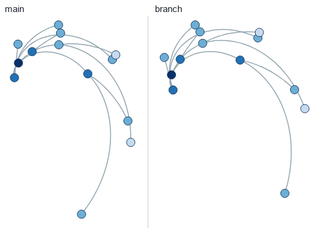
Spiral layout. Turned by half its root gap.
Tornado tree. Turned, and the SVG goes from 505 by 390 to 426 by
456.
Tornado tree 2. Turned by half its root gap.
The tornado tree's spec at the time, since rewritten
{{code:r2-tornado}}
On a line nothing is glued, so the default is 0, and a stated
ends gives the three CSS spacings.
Fork: the default on a glued axis. (a) Keep half a gap at each
end, and each GoTree story that needs it writes
ends: [0, 1] itself, as the side tree and the spiral
layout now do. (b) Keep half a gap at each end, and GoTree's lowering
writes ends: [0, 1] on the root's sibling chain, so the
stories need not. (c) Make a whole gap at the end the default. That is
a one-line change in the library, and the pie and chord then match
d3's layouts rather than d3.arc. Recommended: (b). Half a gap at
each end is what d3.arc draws and what a pie user sees, and the GoTree
stories are better fixed in GoTree, which knows that its root is a
tree and not a pie.
{{code:r2-gotree-ends-b}}
3. Embedding, and the last emX and emY flags
today
A mark's size along an axis can be read in two ways. It can be
embedded, a quantity of the space, so a bar's width in a polar
space is an angle and the bar is drawn as a wedge. Or it can be
ink, pixels drawn where the mark sits, so the bar stays a
straight bar of that many pixels.
The branch has one rule. A relation embeds a mark's extent on an axis
only when it fixes both of the mark's edges there. Box spacing, a
minimum gap in a chain, an align by span, and an align at both start
and end all do. A pitch, or an align at one anchor, pins one point,
and the extent stays ink. No rule reads sizes or units. In the
maintainer's words, "a spread embeds its children b/c otherwise its
spatial relationships aren't properly preserved. it has nothing to do
with absolute sizes".
The model case: the rose
Main, with the old code. Each bar states its angle,
w: (Math.PI * 2) / 12.
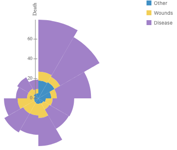
The branch, with no width on the bar. The normalized DOM is
byte-identical to main.
The old code on the branch. The spread already fixes both edges,
so a stated width is now read as ink, and each bar is a thin line.
Old code
{{code:r2-rose-old}}
New code
{{code:r2-rose-new}}
When this question was written, seven stories set a flag. Each pair
below is the branch with its flag, then the same story with the flag
removed, rendered in a throwaway copy of the branch. Since then the
GoTree rework above removed the flag from the tornado trees, the
violin tree and the node-link sunburst, and the balloon chart dropped
its flag too. The multilevel silhouette tree and the outside-in tree
still set one.
(i) Widths placed by a pitch
The tornado trees and the violin tree place nodes by pitches between
centers. A pitch pins one point, so without the flag every node is a
sliver.
Tornado tree.
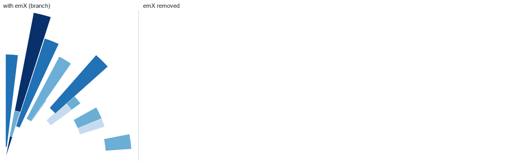
Tornado tree 2.Violin tree.
Rewriting the tornado with box gaps fixes both edges. It ran, and it
does embed the nodes as wedges, but the picture is not the same. The
fan spreads wider. So the rewrite below is a sketch of the direction,
not a replacement yet.
The rewrite, run in a throwaway copy. Not identical to the branch.
Sketch
{{code:r2-tornado-box}}
(ii) Wedges placed by hand with literal numbers
The multilevel silhouette tree and the outside-in tree compute angles
in story code and write them as literal x and
w. The balloon chart's strings are literal heights in a
wavy space. No relation places these marks, so nothing embeds them.
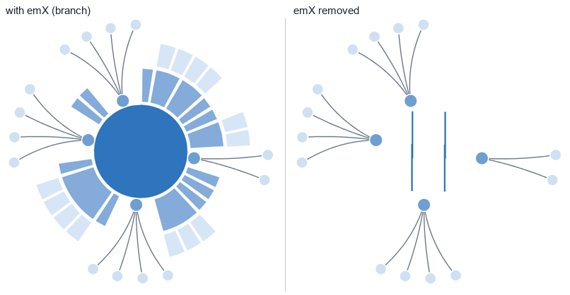
Multilevel silhouette tree. Without the flag the wedges and the
disc become lines.
Outside-in tree. Without the flag it is four tick lines.
Balloon chart. Without emY the strings are straight.
{{code:r2-wedge}}
The balloon's string
{{code:r2-balloon}}
Fork: a literal written in the space. (a) A literal
x or w on a mark with no relation counts as
a quantity of the space, so these stories embed with no flag. (b) The
story writes its literals as data with datum(...), so
they embed through the data scale. (c) Keep an override, which is
today's flag. This one is the maintainer's call, and there is no
recommendation.
{{code:r2-wedge-datum}}
(iii) The node-link sunburst, placed by a center align
The GoTree node-link sunburst aligns each parent to its children at
their middle. That pins one point, so without the flag only the leaf
ring keeps its shape. Aligning at start and end instead fixes both
edges. That rewrite ran, and its normalized DOM is byte-identical to
the branch's render.
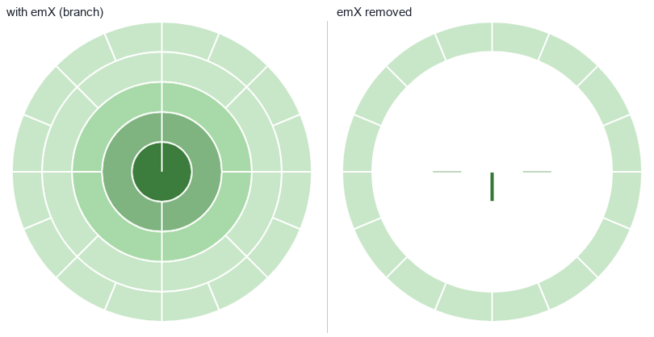
The flag kept, then removed.
The flag kept, then removed with the parent aligned at both edges.
Identical.
Code today
{{code:r2-nodelink-sunburst}}
Rewrite, run
{{code:r2-nodelink-rewrite}}
Recommended for (i) and (iii): rewrite each to relations that fix both
edges, story by story. That is now done. The tornado and violin trees
were rewritten from their GoTree specs, with the axis swap and weights
in place of pitches, and the node-link sunburst gives its wedges
weights.
emX and emY cannot be deleted from the API
yet, since the multilevel silhouette tree and the outside-in tree
still use them. The embed() that
connect uses inside the library stays either way.
4. Two workarounds in the radar today
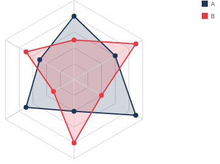
RadarTwoSeries.
{{code:r2-radar}}
(i) The spokes claim radius 0
The spokes are bars from 0 to 10, and they are the only thing that
puts 0 in the radial domain. Without them the radius starts at the
data's least value, 3, and every point moves.
With the spokes, then the same chart with the spokes' chart
removed.
{{code:r2-radar-no-spokes}}
Three ways to say it directly. A trait on the data column that says
its values start at zero (#1195, the issue about declaring traits on
data columns). An explicit domain on the radial axis. Or reading the
value as a size channel, which starts at zero by its meaning. The
cleanest is the trait on the column, because the zero is a fact about
the data and every chart of that column then agrees.
(ii) Opacity reaches the stroke
opacity applies to the whole mark, so one polygon with a
faint fill also has a faint outline. The radar draws two polygons per
series to get a faint fill and a solid stroke.
Two polygons per series, then one.
{{code:r2-radar-one-polygon}}
The options are a fillOpacity on polygon, or
a fill color with its own alpha. The cleanest is
fillOpacity. circle and
ellipse already take it, as the opacity of the fill
alone, so the polygon would only gain an option its siblings have, and
the color scale is left alone.
Decided and built
The mean of positions decided
mean([...]) is a position that a relation can use, the
average of the marks it lists. A parent at the mean of its children is
one align.
Dendrogram. Each inner node at the mean of its children.
Tidy tree. Each node at the mean of its first and last child.
{{code:r2-dendrogram}}
Tidy tree
{{code:r2-tidy}}
Slack is an option of the minimum gap
decided
The slack rule is written where the minimum gap is, as
Spacing.atLeast(8, { slack: Slack.center() }).
Distributes whose gaps are linked share one room, so they share one
rule. When none states one, the rule is Slack.start().
Start, center and end. The red box q sits in the room that its
minimum gaps leave between p and r.
Slack.at(0.25).
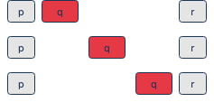
The two ends pinned 160 px apart, and the middle box placed by the
rule.
{{code:r2-row}}
RowPinned
{{code:r2-row-pinned}}
Two linked distributes that state different rules are an error.
{{code:r2-slack-clash}}
Room at the two ends of a spread
decided
Spacing.box(gap, { ends }), and the same option on
pitch and atLeast, sets the room before the
first part and after the last as a multiple of the gap. A stated
ends always wins. On a glued axis the default is half a
gap at each end, which is open question 2 above, and on a line it is
0.
ends
Room at each end
CSS justify-content
0
None
space-between
0.5
Half a gap
space-around
1
A whole gap
space-evenly
[s, e]
s gaps at the start, e at the end
None
ends: 0 on a full turn. The first and last slices touch.
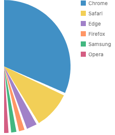
A half turn is not glued, so the default is 0.
The half turn with ends: 0.5.
Nested spreads. Only the outer one fills the turn.
Rings. Each ring's spread fills its own turn.
ends: 2 in a 360 px layer.
{{code:r2-ends-other}}
Nested, rings and fixed width
{{code:r2-ends-nested}} {{code:r2-ends-fixed}}
The earlier closed option on the coordinate space was
dropped, since ends covers every case it served. The
earlier candidates for this card, a switch between two defaults and a
closed flag, are kept only in the history of the page.
Embedding from relations that fix both edges
decided
The rule is the one in open question 3. A mark embedded on one axis
only is drawn as a filled band, not a stroked line. These pairs show
the change in the commit that made the rule.
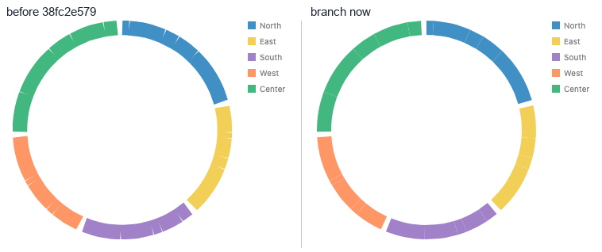
Chord arcs. The notches at the sub-arc joins are gone.
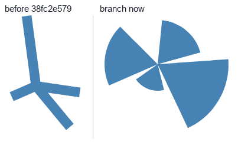
Bars with pixel widths in a spread. Box spacing fixes both edges,
so they are now wedges.
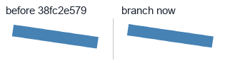
A lone bar with a pixel width. No relation, so it stays ink. Same
picture.
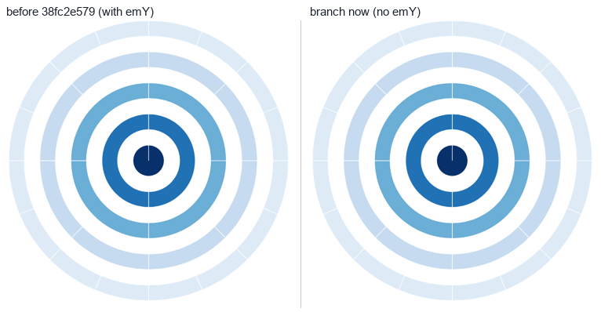
GoTree sunburst with its emY flag, then with the flag
dropped. Both are rendered with the branch's code today. Same
picture.
Every story the branch changed, main beside branch
Sixteen stories changed from embedding alone. The expected kinds of
change are an arc that now ends on the mark's edges, a stroke that is
now an outline, a flag dropped with the same picture, or a root node
that now shows where main drew nothing. Captions marked Flag
show something else.
Seven stories below now show a root node that main did not draw. In
each one the spec gives the root a size and a fill. In six of them the
GoTree reference image also shows a root, and for the node-link
sunburst no reference was checked. Main hid the root because a ring
that spans the full circle collapsed to a point. On the branch a mark
that spans a full turn has no seam, so no white line runs from the
center to 12 o'clock.
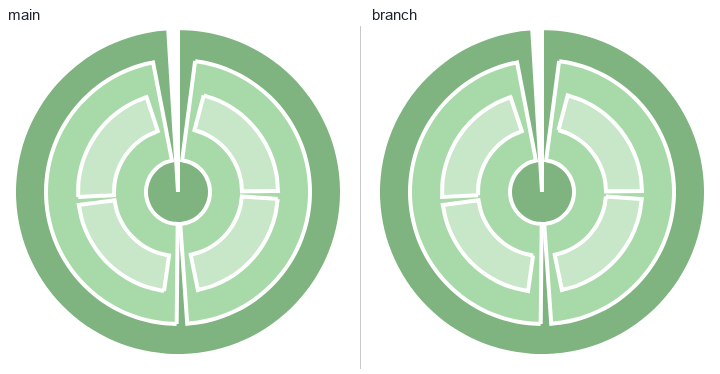
Nested pie tree. Same picture.
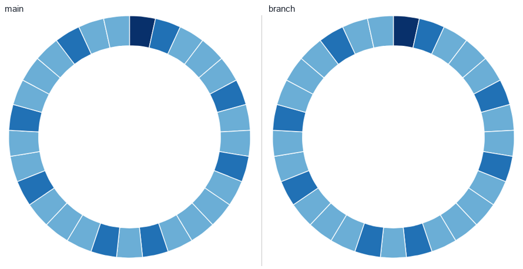
Clock tree with link. Same picture.
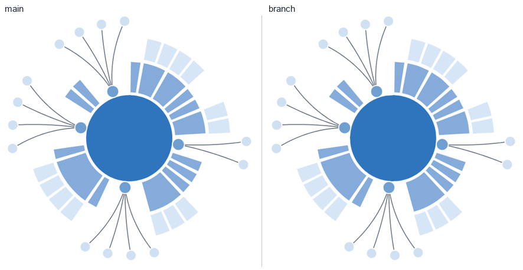
Multilevel silhouette tree. Same picture as main.
Outside-in tree. Same picture.
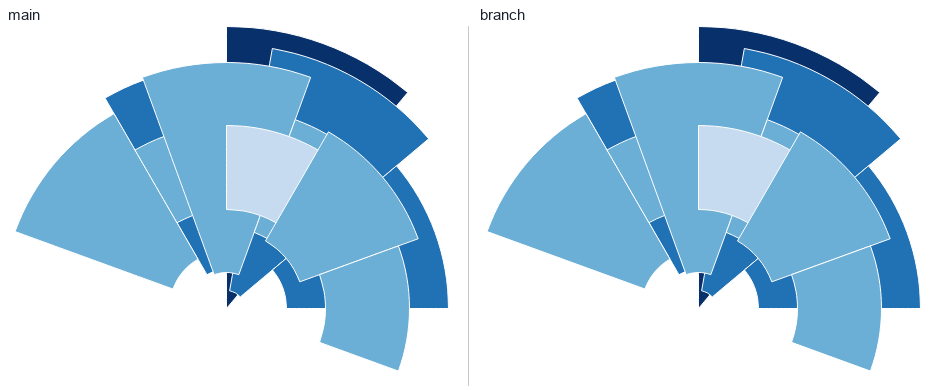
Violin tree. Same picture. Since rewritten; see the GoTree cards
above.
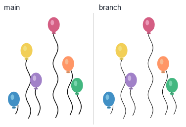
Balloon chart. Same picture.
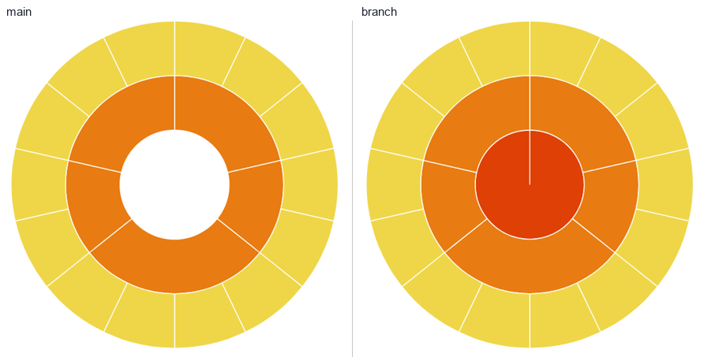
Hierarchical sector chart. The root now shows as a red-orange disc
at the center, as in the GoTree reference image.
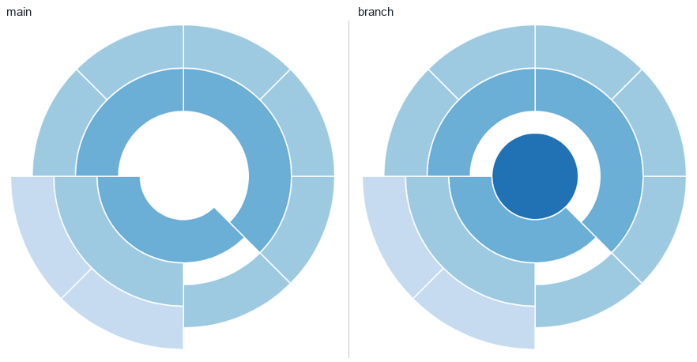
Icicle plot in polar. The root now shows as a disc at the center.
Its reference is a cartesian icicle, whose top band is the root.
The rings around the root sit at uneven radii, as they do on main.
Since rewritten as the cartesian icicle of its reference; see the
GoTree cards above.
Sector tree 2. The root now shows as a dark disc at the center.
The reference's root is the left half-disc; the GoTree cards above
show the story rewritten to match.
GoTree sunburst. The root now shows as a dark disc at the center,
as in the GoTree reference image.
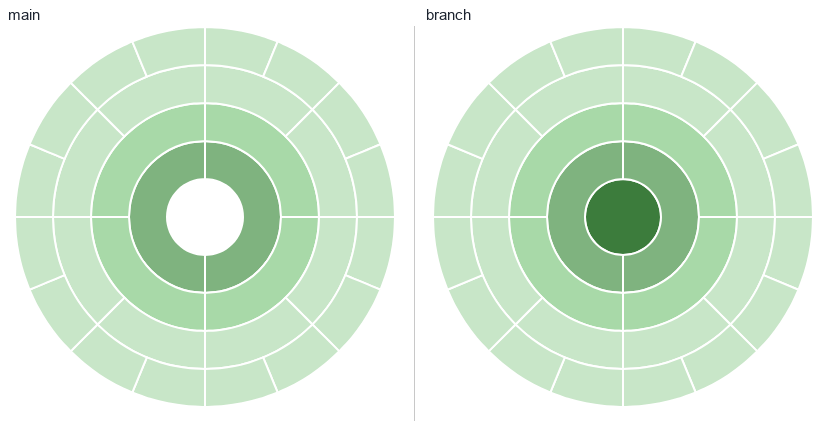
Node-link sunburst. The root now shows as a disc at the center.
The spec declares the root the same way as the other sunbursts. No
reference image was checked.
Sector tree. The root now shows as an 8 px circle at the center.
The GoTree reference draws the root as the outer circle, because
its rings run the other way. The GoTree cards above show the story
rewritten to match.
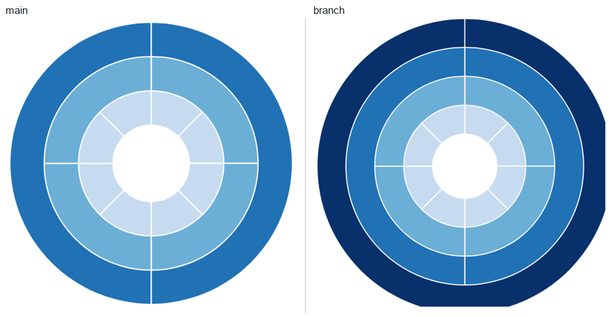
Flag. Tyre tree. The root now shows as the dark outer rim,
as in the GoTree reference image. The layout did not change, and
every ring has the same radii on main and on the branch. The two
sides are scaled to the same height, so the rings look smaller on
the branch. The picture is clipped by 15 px on the right and the
bottom, and it was clipped on main too, with the same warning that
it draws past the canvas. The story's four bands are sized by hand
in pixels and need 224 px of radial room, and the canvas gives
187.5 px. That was a problem in the story's spec. It is fixed in
the GoTree cards above.
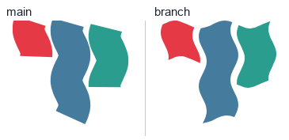
Flag. A spread in a wavy space. The bars now bend on both
axes, and their outlines follow the wave.
Tornado tree. Turned by the end spacing default, open question 2.
Since rewritten; see the GoTree cards above.
Tornado tree 2. Turned by the end spacing default, open question
2. Since rewritten; see the GoTree cards above.
Coord.clock is a preset of Coord.polardecided
Coord.clock() is Coord.polar with 0 at 12
o'clock and turning clockwise. It is sent over the wire as polar, and
it takes only the options it does not fix. Any other start is written
on Coord.polar.
Coord.polar(). 0 at 3 o'clock, counterclockwise.
Coord.clock(). 0 at 12 o'clock, clockwise.
Coord.polar({ baselineAngle: 0, direction: -1 }). 0 at 3
o'clock, clockwise.
{{code:r2-pies}} {{code:r2-clock-error}}
Presets take only the options they do not fix
decided
Preset
Is the kind
Fixes
Still takes
Overlap.sina()
Overlap.noise
smoothing: "silverman"
randomness, padding,
seed
Overlap.jitter()
Overlap.noise
randomness: "uniform",
smoothing: Infinity
padding, seed
Shape.hull()
Shape.blob
convexity: 1, neck: 1
connection, holes,
separate
Shape.spine()
Shape.blob
convexity: 0
connection, neck,
holes, separate
Slack.start()
Slack.at
t: 0
nothing
Slack.center()
Slack.at
t: 0.5
nothing
Slack.end()
Slack.at
t: 1
nothing
Coord.clock()
Coord.polar
baselineAngle: Math.PI / 2,
direction: -1
innerRadius, centralAngle,
center
Passing a fixed option is a type error in TypeScript and an error at
the call in both languages. The message names the kind to write
instead.
{{code:r2-hull-error}}
Refs across a coordinate space, and a polygon over marks
decided
A mark outside a polar layer can refer to marks inside it, and it
reads them where the space draws them. A polygon or
line over a selection runs through those points.
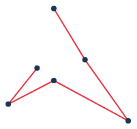
A line outside the space, through the points inside it.
The line inside the space, so it bends with the angle.
{{code:r2-radar-outside-open}}
Inside the space
{{code:r2-radar-inside}}
Two fixes in placement decided
The Bluefish baking recipes story broke when minimum gaps landed. An
align by span only reads its source, so a source nested in a child
no longer counts as moving that child, and the story draws again.
Minimum gaps that leave a rigid group and come back to another
member of it were reported as a cycle. They now solve, and too
little room is its own error that says how many pixels are missing.
RowPinned below is that case.
RowPinned. The ends are one rigid group, 160 px apart, and the
middle box's minimum gaps leave it and come back.
What this is
The maintainer set the goal in two sentences. "I think we can treat
constraints as the lowest level of layout (and position is a kind of
"escape-hatch" constraint) and then we can think of the layout/measure API
as being a form of "macro expansion" that bottoms out at the constraints."
And: "we should be able to write everything
including our stdlib against it". This tab shows a prototype of that
frame. A layout operator is defined with one public call,
defineLayout, whose body returns constraints among the
operator's children, so each use of the operator expands into constraints
that its layer's solver reads, and Constraint.position stays
the escape hatch that pins a child by hand. The prototype lives in a
throwaway copy of the repository at commit fac08ebd7, not on this branch.
In that copy the built-in spread, stack and
tile are rebuilt on the public call, all 751 existing stories
render the same normalized DOM as at fac08ebd7, and the unit tests pass.
The full 751-story comparison ran before the renames on this tab. After
them, the prototype's own stories were rendered again and their normalized
DOM is byte-identical to before, the type check is clean, and the unit
tests pass. Every picture on this tab is a render of the code under it,
made in the copy today.
The call: defineLayout
defineLayout(definition) takes one object and returns an
operator. The operator is called like the built-in ones:
pitched({ gap: 8 }, children). The definition has a name, a
list of its own options, and one body. The body is either
relate or arrange.
{{code:lp-call}}
Field
What it is
name
The operator's name. It is used only in error messages.
options
The names of the options that belong to this operator, e.g.,
["gap"]. Every other option the caller passes
(w, h, x, y,
key, axes) is an ordinary box option
and is handled for you.
check (optional)
A function that looks at the options and children once, when the
operator is called, and throws if they are wrong.
relate(children, opts, tools)
Use this body when the arrangement does not depend on how much
space the operator gets. It returns constraints among the
children. children are handles you pass to
Constraint calls. opts are the
operator's own options. tools.measure(child)
gives a child's width and height as lengths.
tools.axis(name) turns an axis name such as
"theta" into 0 or 1.
arrange(bounds, children, opts)
Use this body when the arrangement depends on the operator's
bounds, as a treemap's does. It runs once the bounds are known
and returns one box or polygon per child, in pixels.
bounds is { w, h }.
request(children, opts) (optional, with
arrange)
How many pixels the operator asks for on each axis. Left out,
the operator fills whatever bounds it is given.
What relate returns is
{ relations, orientation }. relations is the
list of constraints.
orientation should not be in this API. It is 0 when
the children run along x and 1 when they run along y. The engine reads
it for three things: which way a column reads (top to bottom), which
axis an axes option under a coordinate space applies to,
and a check on flexible parts. All three can be worked out from the
Constraint.distribute the body already returns, because
that constraint names its direction. The prototype asks the author to
repeat it only because the built-in spread
stamps this value on its node today (issue #1039, which calls that stamp
a second source of truth, lists it for removal). Recommended: drop the
field and derive it.
Words used on this tab
Operator. A function that takes children and arranges them,
e.g., spread or tile.
Constraint. A fact about the children's positions that the
solver keeps, e.g., Constraint.align (these line up at
their start) or Constraint.distribute (these follow one
another with a gap). Constraint.position pins a child at
a point or between two edges, and it is the escape hatch.
Expansion. The constraints an operator's body returns for its
actual children.
Bounds. The rectangle, in pixels, that a parent gives a child
to lay itself out in. SwiftUI uses the same word for the argument of
placeSubviews(in:). A child's bounds are a box
{ x, y, w, h } or a polygon{ points }, the same shape the polygon mark
takes.
Scale, written σ. Pixels per data unit. The solver picks σ so
that the visualization fits the size it is given.
Scope. A group of nodes that share one scale.
Glue. What stack does and spread does
not. Glued children add up into one data space, so the stack's length
is the sum of theirs, with no gap.
Size request. What a node asks its parent for on each axis, as
a function of σ. A bar 3 data units wide asks for 3σ pixels.
Length. A size that may depend on σ, e.g., 9σ + 6, written
before σ is known.
Claim walk. The pass that works out each node's size request.
The word appears in the prototype's doc comments.
The prototype first called the bounds a "room" and a polygon a "ring",
and both words were replaced because neither has precedent outside
GoFish. Issue #1410 checks every layout engine term against what other
layout systems call it and proposes renames, and "bounds" is its first
row.
Defining and using a custom layout
Each card shows the picture, the definition in full, the use, what the use
expands into for its actual children, and the numbers that show it works.
The code is copied from the copy's stories file,
LayoutProtocol.stories.tsx in
stories/_proposals. A definition has one of two bodies.
relate returns constraints. arrange returns each
child's bounds once the operator's own bounds are known. The section on
the definition call below says why there are two.
A row pitched by its widest child
prototype
Each child starts the same distance after the one before it. That
distance, the pitch, is the widest child's width plus a gap. The top
row is eight words and the bottom row is eight 6 px squares, each a
pitched row.
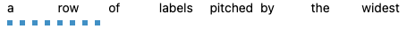
Story PitchedLabels. The words start every 56.6035 px and
the squares every 14 px.
Definition
{{code:lp-pitched-def}}
The body reads each child's width as a length with
measure(c).w, takes the largest with
maxLength, adds the gap, and hands the result to
Spacing.pitch. It returns two constraints and never sees
a pixel.
measure(child) is the prototype's spelling, and the name
is open, because "measure" already means a unit of measure in GoFish.
The design note suggests size(child).
Use
{{code:lp-pitched-labels-use}}
What it expands into
{{code:lp-pitched-labels-exp}}
The words start at x = 0, 56.6035, 113.207 and so on. The pitch is the
widest word's width, 48.6035, plus the gap of 8. The squares start at
x = 0, 14, 28 and so on.
The same row over data widths, fit to 400 px
prototype
Here the children are bars whose widths are data. A bar's width in
pixels depends on σ, so the pitch does too, and the solver must find σ
with the pitch inside the row's size request. This is why
measure returns a length and not a number of pixels.
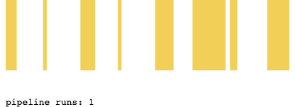
Story PitchedBarsFit. The last bar ends at 400.0000 px.
Definition
The same pitched as in the card above.
Use
{{code:lp-pitched-bars-use}}
What it expands into
{{code:lp-pitched-bars-exp}}
The solver finds σ = 5.1884 for 400 px.
The first bar is 15.5652 px wide, which is 3σ, and the bars start
every 52.6957 px, which is 9σ + 6.
The last bar starts at 368.8696 and is 31.1304 px wide, which is 6σ,
so it ends at 400.0000.
The render ran the layout pipeline once. The story counts the runs
and prints the count under the picture.
A squarified treemap that reads its bounds
prototype
The squarify rule needs the treemap's own width and height, in pixels,
to decide where each row of cells ends. So this definition uses the
second body, arrange, which runs once the treemap's
bounds are known and returns each child's bounds. The built-in beside
it is tile with Tiling.squarify.
Story UserSquarify, the user's squarified.
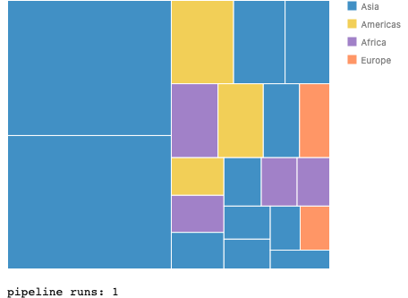
Story BuiltinSquarify, the built-in tile.
Definition
{{code:lp-squarify-def}}
The squarify helper, 58 lines of plain TypeScript with
no GoFish imports
{{code:lp-squarify-helper}}
squarify is the squarify rule as d3's
squarifyRatio runs it, with the golden ratio, written
from scratch. It returns one rectangle
[x0, y0, x1, y1] per weight, and box turns
each into a box.
Use
{{code:lp-squarify-use}}
What it returns
{{code:lp-squarify-exp}}
This body returns bounds, not constraints, so its use does not yet
expand into constraints. The card "The second body is not constraints
yet" below says why, and shows the treemap written with a constraint
instead.
The normalized DOM of the two stories is byte for byte identical.
The drawn rectangles are the boxes above moved half a pixel right
and down, e.g., India's is at x = 0.5, y = 0.5 with width 182.9656.
The built-in draws the same numbers, so the user layout adds no
shift of its own.
Neither story writes a layout warning.
Each render ran the layout pipeline once.
The treemap inside a larger visualization
prototype
The same treemap under a title in a spread, with an arrow
from the title to China's cell. The treemap's bounds are what the
spread leaves it. The arrow reads the cell from outside the treemap,
by name.
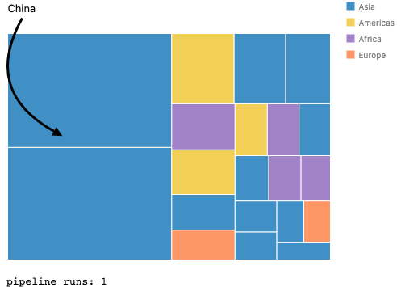
Story UserInSpread, the user's squarified.
Story BuiltinInSpread, the built-in tile.
{{code:lp-in-spread-use}}
The normalized DOM of the two stories is identical, and each render
ran the layout pipeline once. China's cell is the large one at the
lower left. The arrow ends a little above that cell's top edge, at the
same point for both treemaps. Whether that gap is the arrow's intended
padding was not checked.
The same treemap under Coord.polar():
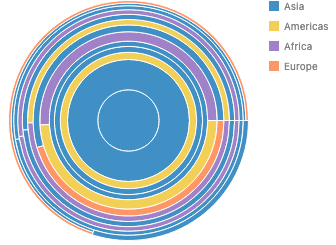
Story UserPolar.Story BuiltinPolar.
{{code:lp-polar-use}}
The normalized DOM of the two stories is identical. An
arrange body works in its own flat frame, and the
coordinate space warps the result, as it does for the built-in.
A spread written by a user
prototype
The built-in spread is nothing special. This
row is a relate definition of 15 lines that
aligns its children across dir and distributes them along
it. axes.axis(dir, ...) turns an axis name into axis 0 or
1, so dir: "theta" works under a polar coordinate space.
Story UserRow, the user's row.
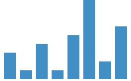
Story BuiltinRow, the built-in spread.
Story UserRowPolar, row along theta.
Story BuiltinRowPolar, spread along theta.
Definition
{{code:lp-row-def}}
Use
{{code:lp-row-use}}
What it expands into
{{code:lp-row-exp}}
The normalized DOM of UserRow and BuiltinRow is
identical, and so is that of UserRowPolar and
BuiltinRowPolar.
What a wrong definition does
prototype
Three wrong definitions, each rendered. The prototype checks one
mistake in each body and leaves others unchecked.
An arrange body that returns bounds for 19 of its 20
children:
{{code:lp-err-bounds}}
The render fails with this message:
{{code:lp-msg-bounds}}
A relate body that asks for the pixels of a length the
scale changes, here the width of a data bar:
{{code:lp-err-pixels}}
The render fails with this message:
{{code:lp-msg-pixels}}
The message does not name the operator, because it comes from the
length, which does not know which definition read it. Both errors are
thrown during layout, after render has returned, so they
reach the page as unhandled errors and the promise
render returns does not reject. The stories catch them
with a window listener to print them.
A relate body that leaves its first child (red) out of
every constraint. Nothing checks this. The red bar lands at the
layer's origin, under the first bar the constraints place:
Story UncheckedDroppedChild. No error and no warning.
{{code:lp-dropped}}
A relate body cannot create or remove a child, because it
returns constraints and not nodes. Naming a child in two constraints
on the same axis is how constraints normally combine, so it is not a
mistake the protocol can see.
The standard library on the same call
The built-in spread, stack and
tile are defined with defineLayout in the copy.
The line counts are these. tile.tsx went from 466 to 278
lines, because the engine code it held moved into
layoutProtocol.ts. spread.tsx went from 371 to
413 lines. layoutProtocol.ts is new and has 415 lines. Before
the renames on this tab the counts were 273 and 391. The renames added the
Box and Polygon types and the code that turns
them into the engine's outlines.
spreadprototype
The key lines of its relate body, with comments removed
(spread.tsx lines 235 to 263 in the copy):
{{code:lp-spread-key}}
The whole implementation in the copy, spread.tsx lines 36 to 266
{{code:lp-spread-full}}
Before, at fac08ebd7: the lines that built the constraints, 65 of
the operator's 172
{{code:lp-spread-before}}
The definition returns an align across dir and a
distribute along it, the same two constraints the old code installed
by hand. From the protocol it needed axes.axis, to turn
dir into an axis inside the coordinate space, and the
orientation field, which replaces writing the node's
private axisDir. The file grew by 42 lines because the
options are now passed twice, once into the definition and once
destructured in its body, and because the definition has its own
option type, its list of option names and a doc comment.
It still reaches for these, which a user could not write:
Four options of Constraint.distribute that are not in
the IR: baseline, hasMidpoint,
measure and hasOrder (spread.tsx 249 to
258). A JS user can pass them, but they are not documented and do
not cross to Python (gofish-ir descriptors.ts 2999).
The wrapper around the definition, which handles the
size option, wraps each child in a
layer and copies private node fields onto the wrapper
(_syntheticKey, keyCell,
keyBy, __splitBy, datum,
spread.tsx 139 to 153).
The internal helper axisName (spread.tsx 18, 226 and
227) and createNodeOperator (spread.tsx 54).
stackprototype
stack did not change. It is spread with
glue: true, so it runs the same definition, and the
distribute it returns adds the children's data sizes in one data space
instead of spacing them.
Its code in the copy, spread.tsx lines 373 to 413, unchanged
{{code:lp-stack}}
tileprototype
The key lines, its arrange body with comments removed
(tile.tsx lines 211 to 250 in the copy):
{{code:lp-tile-key}}
The whole definition in the copy, tile.tsx lines 180 to 251
{{code:lp-tile-full}}
Before, at fac08ebd7, tile was a node of its own of 223
lines (tile.tsx 217 to 439). It declared its own scope rules, its own
size request, the box it fills, the weights and the tiling, and it
laid out and placed each child in its cell by hand. Now the definition
is 59 lines. It returns each child's cell as a polygon, and the
protocol does the rest, with the same engine code the old node had.
It still reaches for these, which a user could not write:
cellsOf, the internal code of the
Tiling strategies (tile.tsx 239).
Two internal checks, Frontend.checkStrategy (tile.tsx
223) and checkSummable (tile.tsx 206).
byChild, which puts the cells back in child order. It
is exported from layoutProtocol.ts but not from the
library (tile.tsx 245).
What the protocol itself reaches for
The call is written inside the engine, so it uses engine internals
that a definition does not see. These are the ones that would stay if
the call became public.
A relate definition is built as a layer,
and its body runs in the pass that gives axis names their meaning,
by replacing the layer's private
_elaborateInAxisScope hook (layoutProtocol.ts 191 to
197).
The one await in the protocol is around
INTERNAL_relate (layoutProtocol.ts 221), because
drawing clauses in .relate are marks that are built
asynchronously today. Constraints alone need nothing asynchronous.
INTERNAL_relate runs requireLayer, a check
on the node's type by name (_node.ts 3708 and 3740), and four passes
check type === "coord" (_node.ts 2410 and 2484,
axisDirection.ts 105, gofish.tsx 1135). #1279 accepts both as
special cases of the domain.
The orientation and the axes option are written to the
private fields axisDir and
_axisOverride (layoutProtocol.ts 222, 224 and 385).
defineLayout picks the relate path or the
arrange path by the shape of the definition
(layoutProtocol.ts 175). That is a second path, and it goes away if
the second body becomes constraints.
The definition call
These are the public types in layoutProtocol.ts in the copy,
lines 50 to 156, and the call itself, lines 170 to 179. The library
exports defineLayout and maxLength, and the
types LayoutDefinition, RelateDefinition,
ArrangeDefinition, LayoutChild,
Bounds, Box, Polygon,
Arrangement and Relations.
{{code:lp-protocol-types}}
Two names are open. defineLayout may instead be part of
defineOperator, the public call #692 plans beside
defineMark. measure(child) may become
size(child). The callout below gives a recommendation.
Body
Returns
Knows when it runs
Takes part in fitting
A ref from outside can reach a child
Shares a scale with its children
relate, without measure
constraints
the children as handles, the axis names
yes
yes
yes
relate, with measure
constraints whose numbers are lengths
also the children's sizes, as lengths
yes
yes
yes
arrange
each child's bounds
also its own bounds in pixels, and each child's request in pixels
no, it fills its bounds or asks for a size in pixels
yes, after layout, as the arrow shows, but not while sizes are
worked out
no, each child is a scope of its own
A relate body asks a child one thing,
measure(child), which gives its width and height as lengths.
A length supports four operations, and asking it for pixels throws when
the scale changes it, with the message shown in example (f):
a.add(b), where b is a length or pixels.
a.sub(b).
a.times(k), for a number k.
maxLength(a, b, ...), the larger at every σ.
{{code:lp-length-ops}} {{code:lp-length-fns}}
An arrange body asks each child request(axis),
its size in pixels before σ is known, and fillsBounds(axis),
whether it fills the bounds it is given.
Fork: the names. (a) Keep defineLayout, which says
what the body does but adds a second definition call beside #692's. (b)
Make a layout a kind of operator under defineOperator (#692),
so one registration path covers layouts and other operators and a user
layout gets a descriptor that can cross to Python. For the child query,
(a) measure(child) as in the prototype, or (b)
size(child), which reads as what it returns and does not
collide with GoFish's units of measure. For the constraint the next
section proposes, the naming survey recommends
Constraint.cell, and the card there gives the alternatives.
None of these names is decided. Recommended:
defineOperator with a relate body, and
size(child).
Where it falls short
The second body is not constraints yet
proposed, not built
The squarified treemap in example (c) returns bounds, not constraints.
A layer reads its constraints three times before its own bounds exist.
It reads them to decide which children share a scale, to decide which
children are pinned in a coordinate space, and to work out its size
request. A body that needs the bounds cannot have its constraints
there in time, so the prototype gives such a body a node kind of its
own, the arrange path. That is a declared shortcut.
The fix is a bottom-level constraint that lays a child out inside a
box, whose kind is known early and whose numbers come once the bounds
are known. The three early readers learn what they need from its kind.
The child is a scope of its own, it is not pinned, and it asks its
parent for nothing. With it, a definition has one body,
relate:
{{code:lp-cell-sketch}}
Beside it, the arrange body that ran:
{{code:lp-squarify-def}}
The naming survey for this constraint is done, and its result is not
decided. It recommends
Constraint.cell({ x: [x0, x1], y: [y0, y1] }, [child]),
and { points } for a polygon cell. The public
tile and partition docs already say each
child is handed "its cell", and CSS Grid's "grid cell" and
d3-delaunay's cellPolygon are precedent outside GoFish.
The two alternatives are these:
Constraint.frame. SwiftUI's .frame does
this for one child, so it is the best match outside, but GoFish uses
"frame" for a node's coordinate frame about 860 times in the source.
Constraint.place. It is the common verb, but every
system that uses it places a child at a point, and it collides with
the public Placement family.
Constraint.position already has a hidden internal form
for this, its region option, which is how
partition gives each child its cell. The new constraint
would take over that form, and position would go back to
meaning only "pin this point or these edges".
Fork: should the second body become constraints? (a) Keep two
bodies, relate and arrange. (b) Add the
bottom-level constraint above, so a definition has one body that
returns constraints, and arrange is either removed or
kept as a short way to write a relate body that returns
one such constraint. Two questions come with (b). Does a cell always
make its child a scope of its own? tile's children are,
and partition's data cells may not be. And should the
constraint take an alignment, as SwiftUI's .frame does?
It always centers today. Recommended: (b), named
Constraint.cell. It is the frame the maintainer set, and
it removes the second path in defineLayout. It was not
built because it changes how a layer reads position's
region form, which partition and
scatter share.
A child of the second body is asked only for pixels
not built
Each child of an arrange body is a scope of its own, so a
child whose size is data asks its parent for nothing, and
request(axis) returns no size for it. A body that wants
its children's sizes in σ cannot have them. This is the same limit
#967 found for pack. The fix is the constraint in the
card above, together with measure in a
relate body.
No layout whose height depends on its width
not built
A flow of words that wraps into lines has a height that depends on the
width it is given. A size request is one function of σ per axis, and
request in arrange returns pixels per axis,
so a wrapping row inside a layout that fits to it cannot be written.
This is the same limit the choose proposal found for
wrapping at a solved width.
A measured length has no wire form
not built
A length from measure is a function inside the engine,
and its toJSON throws. The IR's Length
type cannot say "the width of child 3", so a definition that uses
measure cannot cross to Python. A Python
relate body would also have to run as a callback, as
derive lambdas do. The prototype also checks a measured
spacing as 0 px when it validates a spacing strategy (distribute.ts
205), which is a declared shortcut marked in the code. The fix is an
IR Length member for a measured length.
Built-ins that are not expansions into constraints
These do not arrange children, so they stay outside the protocol, and
that is fine for each:
coord gives axis names their meaning and warps its
children after layout.
connect, line, ribbon,
arrow and enclose draw from other nodes'
positions after layout.
cut clips its child.
The compositing operators (union,
intersect and the rest) combine the regions of their
children.
Axes, legends and titles are layers that the library adds around a
visualization, so they are already constraints.
Marks have a size request and no children to place.
One is not fine. pack arranges children and is still a
node of its own that places circles by a procedure in pixels.
scatter, partition and table
already build a layer with constraints, but they were not moved onto
defineLayout.
Operators are built asynchronously
separate prototype
A separate prototype makes building an operator synchronous. Its patch
touches 23 files. With it, 748 of the 751 stories render the same
normalized DOM, and the other three are byte-identical after a
one-line fix. This prototype does not include it. With it, the one
await in defineLayout goes away, and no
definition changes.
Fork: landing order. (a) Land the layout protocol first and the
synchronous building after. (b) Land the synchronous building first,
as its own change, and then the layout protocol on top of it. Recommended:
(b). It is a refactor that changes no output, and the protocol is then
written without the await
from the start.
How this compares with SwiftUI
SwiftUI's custom layout is the Layout protocol (Apple's documentation, and the WWDC22 session
Compose custom layouts with SwiftUI). A layout writes
sizeThatFits, which returns its size for a proposed size, and
placeSubviews(in:), which places each child with
place(at:). The prototype differs in four ways:
The size request. A SwiftUI layout writes its own. In the
prototype the solver derives it from the constraints a
relate body returns.
Asking a child its size. A SwiftUI layout asks a child (LayoutSubview) for its size in points, as many times as it likes. A
relate body reads each child once, as a length in σ.
Placing. A SwiftUI layout calls place(at:) for each
child. A relate body returns constraints as data, and the
solver places.
Choosing between layouts. SwiftUI has ViewThatFits.
GoFish would have choose, which is proposed and not built.
The reason is one. A SwiftUI size is a number, so asking a child its size
is cheap and exact. A GoFish size depends on σ, which is solved for a
whole scope at once, so a body cannot ask a child for pixels before the
solve. No public statement by a SwiftUI engineer about a more declarative
layout was found, so none is cited here.
A row or a column, whichever fits, in SwiftUI as a custom layout:
{{code:lp-swift-row}}
In GoFish with choose, as a sketch. It is one choice between
two expansions, and the engine already has each one's size request, so
nothing is measured twice and nothing is placed by hand.
{{code:lp-choose-row}}
choose and what stays procedural
Each studied layout makes some decisions that depend on its bounds or on
sizes. The table sorts those decisions into four kinds:
(a) none,
(b) a small fixed set of alternatives, which choose covers,
(c) a large family of alternatives with a cost to compare them,
(d) a procedure.
Layout
Kind
Reason
spread, stack
(a)
The order and gaps are fixed, and σ is solved.
pie, sunburst, icicle
(a)
Stacks and partitions under a coordinate space.
treemap slice, dice, slice-dice
(a)
A stack of fr shares along one axis, alternating by
depth.
treemap binary
(b) per split
Each split chooses x or y by the shape of its bounds.
treemap squarify, strip
(c)
Where each row ends and which way it runs, scored by aspect ratio.
tidy tree
(a)
Separations are maxima of contour lengths, which compose with
maxLength once measure returns contours.
dendrogram
(a)
Leaves are a spread, and each parent sits at the middle of its
children.
sankey columns
(a) for layout, (d) for order
Columns come from data. The order heuristic repeats, but reads
only data, so it runs in derive.
layered graph ranks
(a) for layout, (d) for crossings
Ranks and crossing reduction read only the graph. Coordinates are
a linear program, which is constraints.
wrap, flow
(c), or (b) per break
Each possible line break chooses to break or not. The first fit at
each break is the greedy flow, and a cost gives the best one.
row or column
(b)
Two alternatives.
circle pack
(d), independent of its bounds
A chain of circles placed in turn. Without padding it is a
multiple of σ, so it expands to positions in lengths.
Voronoi
(d), needs its bounds
Cells come from the sites and the shape of its bounds.
force
(d), needs its bounds
It repeats its steps in a fixed box.
Squarify both ways. The arrange body that ran is in example
(c). As a choose with a cost, as a sketch:
{{code:lp-squarify-choose}}
The choose form needs an axis named by the shape of the
bounds (dir: "short"), a cost read from placed cells, and a
choice at each break. All three read the bounds, so the decision still
happens after σ is solved. For squarify the choose form gains
nothing over the body that ran, because a treemap fills its bounds and
asks for nothing. For flow and for row or column it gains a lot, because
there the choice changes the size request.
Deriving size requests from constraints is cheap today. A scratch script
in the copy (src/tests/unfoldCost.scratch.ts) timed the claim
walk, the pass that works out each node's size request. Each node is
worked out once, at about 0.04 ms per node, and the claim walk is 36 to 43
percent of layout for visualizations made of spreads and stacks. A
definition that wrote its own size request would save only its own part of
that 0.04 ms, because placement reads its children's requests anyway. So
the protocol has no way to write a size request by hand except in
arrange, and it should add one only if a profile shows the
claim walk is the bottleneck.
A layout algorithm has two parts. Its decisions are discrete:
an order, a grouping into rows, which side a dot goes on. Its
relations say how positions and sizes depend on each other once
the decisions are made. A solver turns relations into
positions.
The relations today's solver handles come down to five primitives: a
linear equation between positions, a minimum gap, one shared scale per
scope, a coordinate map, and a choice. stack,
spread, tile, a tidy tree and a sankey are
compositions of those.
Every d3 layout was written this way and compared with d3's own
numbers. Pie, stack, partition, treemap, tree, cluster, chord arcs and
a sankey without relaxation match exactly. Circle packing, force and
sankey relaxation need relations today's solver does not have.
Those are jobs for other solvers: one for geometry (touching,
intersecting) and one that optimizes (pulls, repulsion). A scope picks
its solver the way it picks a coordinate space, and solvers meet only
at scope boundaries.
User code writes decisions three ways: a function that calls
measure on its children, a choose among
alternatives, or a layout that reads the room it was
given.
Nothing is implemented except prototype stories, the minimum gap and
the average of positions (in the engine since commit b960e601d, and
written mean([...]) inside
Constraint.align), the Slack family's
start, center, end and
at(t) as an option of Spacing.atLeast, and
ends on the spacing strategies for the room at the two
ends of a spread.
DecisionsDiscrete. Made by plan code, or by choose.which items share a row, the order in a column, which two circles a
new one rests on
RelationsFacts between shapes. Data, not code.these are 10 apart, this is at least clear of that, these touch
A solver per scopeTurns one scope's relations into positions.today: one symbolic solver. Later: geometry, optimization
This is the split issue #485 asks for: a small relational core, and
user-space algorithms that hand it their discrete commitments instead of
final positions. A commitment survives a resize or a data edit. A position
does not.
Today. The average is mean([...]), an operand of
Constraint.align.
A minimum gap, with a rule for the slack
b − a ≥ g, then start, end, center or even
Spacing.atLeast(g),
Spacing.contour(g) on distribute and
spreadsketch
In the engine since commit b960e601d. The slack rule is
Spacing.atLeast(g, { slack }), with no
even; see "The slack rule".
One scale per scope
size = value × scale; a container is the max of its
contents
rect({ h: "value" }), shared across a scope
Today. It solved d3-sankey's scale on its own.
A coordinate map
positions → f(positions), applied after the solve
Coord.polar(), Coord.clock()
Today. A full-turn angle is glued, so a spread that fills it
leaves as many gaps as parts, by default half a gap at each
end.
A choice
the minimum over alternatives
choose([a, b])sketch
The choice proposal. Needs min in the size
algebra (#630).
The first three are one piece of mathematics: equations and lower
bounds on differences of positions, a max, and one unknown scale. That
is why one pass solves them. Every operator below lowers into these.
Operator
Lowers into
stack, spread
equal positions across, an exact gap along. Today.
tile (treemap)
a decision (which items share a row), then nested stacks whose
sizes are shares of the parent.
pie, sunburst, chord arcs
stacks and spreads along the angle, inside a coordinate map.
Today.
a tidy tree, a dendrogram
minimum gaps between subtrees, an average for the parent.
a sankey, a layered graph
minimum gaps for the columns, spreads on one shared scale for
the nodes, stacks for the links, and a decision for the order.
Relations for other solvers sketch
Solver
Its relations
What needs it
Symbolic (today)
equations and minimum gaps between positions, per axis, with
one scale
charts, trees, treemaps, sankeys without relaxation
Geometry
touches, intersects, lies on, at a distance, at an angle
circle packing (each circle touches two others), Voronoi cells
(a cell is its region cut by lines), ribbons through a center
Optimizing
pull toward a position, keep a distance, push apart, do not
overlap
force layouts, sankey relaxation, label avoidance, the
beeswarm's above-or-below
{{code:p-relations}}
The names Solver.geometry and
Constraint.touch only show the shape of the idea. The
point is that a relation is data in one vocabulary, a solver declares
which relations it handles, and a relation handed to a solver that
does not handle it is an error at the layer that declared it.
Solvers meet at scope boundaries
Across a scope boundary, solvers share no unknowns. What crosses is
small and the same for every solver:
Down: the room offered, as a box or a convex shape.
Up: how much room the scope needs, and its geometry (box,
enclosing circle, outline).
Nothing else. No scale is shared across the boundary, and no
length leaves the scope it was computed in.
Inside a scope, solvers can share unknowns in one direction.
One runs first and the next reads its results as known. The engine
already does this: the overlap step and label placement run after the
symbolic solve, on the positions it fixed. That covers a beeswarm (x
from the symbolic solver, the other axis from another), ribbons drawn
after their nodes, and a circle placed against two circles that are
already placed. It is an order of solvers, not an exchange between
them.
Nelson-Oppen does not give more than that for these solvers.
It combines solvers that share unknowns by passing equalities between
them until nothing new appears. It needs the theories to have no
operations in common, and the symbolic and geometry solvers both do
arithmetic on the same coordinates. It answers whether a solution
exists, not which one a slack rule or a cost would pick. And where a
relation has an either-or consequence (a circle that touches two
others has two possible places), it needs case splits, which here are
the decisions. The design note in PR #806 draws the same line: the
lesson to keep is cooperation through a small shared set of facts, not
the algorithm. Unknowns that two solvers constrain at the same time
belong inside one solver whose relations cover both, which is the
optimizing one.
This is the same boundary a layout function needs
(below), and it is what issue #806 calls cooperating layout theories.
A geometry scope inside a chart is a child with a size. A chart inside
a geometry scope is a shape to be placed. The symbolic solver asks one
more thing of a scope that wants to take part in fitting a chart to
its room: its size must be a function of the scale that never shrinks
when the scale grows. Circle packing gives one when all its radii come
from data, because the whole packing grows with the scale. That is
what d3 does.
Writing the decisions
The Layout protocol prototype tab builds this as one call,
defineLayout, and shows two things this section does not
know: the function that calls measure ran with lengths, and
layout(children, body) (there an arrange body)
needed no second run, because its children are laid out in the same run.
Three ways, by when the structure is known
Structure
What user code writes
What it can do
Example
Fixed. Values flow through it.
a function that calls measure and returns
relations
Joins the one solve, takes part in fitting.
a tidy tree, a sankey
A choice among alternatives that all exist up front
choose([a, b])
Every alternative is measured, one is picked, nothing is
created late.
wrapped text, a row that becomes a column
Depends on a value known only late
layout(children, body)
A nested second run inside its box. The escape hatch.
squarify, which compares aspect ratios
{{code:p-api}}
measure answers in lengths. A length is a size before
the scale is chosen. Arithmetic that stays inside
Length (add, subtract, scale by a number, max) keeps
the result solvable, which is the rule the engine's own code
follows. .px leaves that world and is an error if the
length depends on the scale.
layout gives pixels, because room comes down after the
scale is solved. Its body runs then, so a layout node
asks for no room of its own, and what it returns is laid out in a
second run inside its box.
The children are an argument and the body only arranges them. Marks
carry the data, names and colors, so they have to exist before the
body runs. A mark created inside the body is an error.
None of the three places anything. They return operators and
relations, and the solver does the placing.
Fork: the names.layout and
measure are Typst's spellings for exactly these two
things. The alternative is a second argument to
createMark, which adds no top-level names but ties both
to defining a mark. This page uses layout and
measure.
layout: a treemap that reads its box
sketch
treemap({ tile: Tile.squarify }), built-in
Nested stacks in user space today, with the size typed by hand.
All 20 cells agree to 3e-14 px.
{{code:p-layout}}
measure: a tree's contour fit, in lengths
sketch
{{code:p-fit-lengths}}
It only subtracts, adds a number and takes a max, so the result is
still a length. With the minimum gap as a primitive, user code would
not write this at all: spread with
Spacing.contour is this fit.
choose: alternatives that exist up front
sketch
{{code:p-choose-responsive}}
Wrapped text is this case. Every way of breaking the text exists up
front. With a literal width nothing new is needed. With a width that
comes from the room offered, the height has to be measured after the
width is placed, which means finishing the x passes before the y
measure pass. Only a trade between the two axes needs a set of
alternatives carried upward, which is the frontier in the choice
proposal.
In Python sketch, not run
{{code:p-api-py}}
layout takes a function, so it goes through the callback
runner, as derive does. A function that calls
measure runs inside the engine, so it is a callback too.
Relations and choose are data and need no callback.
Each layout was written through GoFish's public API, the way GoFish
already writes it where it has a way, and compared with d3's numbers for
the same input. exact means the difference
is rounding. partly means some of it
matches. not matched means the prototype shows
it does not fit. on paper means it was not
run.
d3 layout
Decisions
Relations
Solver
Against d3
pie
a sort
a stack along the angle, sizes on one scale, a polar map
symbolic, today
exact angles identical. With
padAngle, the default ends match the rim d3.arc draws
within 1.8e-15 rad, and ends: [0, 1] matches d3.pie's
own angles within 8.9e-16 rad.
stack: none, expand, silhouette
the series order
a stack per x; normalized sizes; stacks aligned on their middle
symbolic, today
exact 0 px at every x, both orders
stack: wiggle
the series order
a stack per x on a baseline that d3 gives by a formula
symbolic, today, with a workaround
exact 1e-4 px. The prototype puts
the baseline in as an invisible first band.
Baseline.wiggle() landed on main after it was written
(#1375) and has not been compared with d3 yet.
treemap: squarify, binary, slice, dice
which items share a row
nested stacks whose sizes are shares of the parent
symbolic, today
exact 3e-14 px at spacing 0. d3's
padding is a different relation from spacing.
partition: icicle, sunburst
none
each node stacked above the stack of its children; the same in a
polar map
symbolic, today
exact 1e-4 px; angles identical. The
sunburst's root disc is drawn, and its rings have no seams.
tree (tidy)
none
minimum gaps between subtree contours, slack spread by Walker's
rule; the parent at the average of its first and last child
symbolic, with the minimum gap
exact node for node, on the test
tree and 398 random trees. The left-packed and centered variants
were run through the one solver. d3's spread was matched by direct
code, not yet through the solver. The even rule alone matches 327
of 331 random trees ("The slack rule" tab).
cluster (dendrogram)
none
leaves in a spread; levels by minimum gaps packed to the end; the
parent at the average of its children
symbolic, with the minimum gap and the average
exact all 24 nodes. The average is
mean([...]), and the result draws the same links as
the version computed by hand.
sankey, no relaxation
node order, link order
columns by minimum gaps; each column a spread on one shared scale,
slack shared evenly; links as stacks against each node's sides;
ribbons
symbolic, with the minimum gap
exact 0 px for nodes and links, for
all four of d3's alignments. GoFish solved d3's scale itself.
sankey, relaxed
node order
each node pulled toward the weighted mean of its neighbors, kept
in order and apart
optimizing
not matched up to 68 px off. A pull is
not a constraint.
pack
which two circles each new circle rests on
touches; the smallest enclosing circle
geometry
partly a different greedy rule packs
within 4% of d3's radius. d3's own choices replayed as "touches"
were not run.
chord
sorts
a spread of groups along the angle, each a stack of sub-arcs;
ribbons through the center
symbolic for the arcs, geometry for the ribbons
partly arcs match to 7.4e-5 rad with
ends: [0, 1]. Ribbons through the center cannot be
drawn.
force
none
pulls toward positions, target distances, repulsion, no overlap
optimizing
drawn only d3 computed the positions
and GoFish drew them.
Voronoi, Delaunay
site positions
a cell is its region cut by one line per other site; Delaunay is
which sites are neighbors
geometry (a built-in today)
exact cells match d3-delaunay to
1e-4 px
histogram, hexbin, contour, bundle, geo
Not layouts in this sense. They are data transforms, curves and
coordinate maps, and GoFish has them as bin,
Curve and Coord.geo.
So the layouts that are equations and gaps come out exactly, with no new
operator. The ones that do not are the ones whose core relation is
touching or pulling. None needed anything outside the three solver
families.
Pie, sunburst, icicle, chord: stacks and a coordinate map
today
Pie. The existing Pie story also matches d3.pie to 1e-5
rad.
Icicle. Within 1e-4 px of d3.partition, as is the existing
Icicle story.
Sunburst: the same stacks in a polar map.
Chord arcs. Within 7.4e-5 rad of d3.chord, with
ends: [0, 1].
{{code:d3-pie}} {{code:d3-partition}}
Chord arcs
{{code:d3-chord}}
These are written the way GoFish already writes a pie. They have no
plan at all. What is missing is a ribbon that crosses the center. A
spread that fills a full turn leaves as many gaps as slices, half a
gap at each end by default.
Stack and its offsets today
stackOffsetNoneExpandSilhouetteWiggle, inside-out order
{{code:d3-stack}}
All match d3 at every x. In the prototype, wiggle's baseline and the
inside-out order are plans (17 and 15 lines of d3's formulas). Main
now has Baseline.wiggle(), which should replace the
first. d3's diverging offset was not tested. It needs two stacks per x
that meet at zero.
Treemap: one tiling, many settings
today
squarify. 0 px from the built-in.stripspiralpivot
Baudel and Broeksema (2012) show the rectangular treemaps are one
algorithm with five small functions plugged in: the order, the size, a
score that says when to close a row, whether to subdivide a closed row
again, and a phrase that says which side the next row goes on. That is
the decision. The relations are nested two-child stacks. It works one
level at a time, which is what tile is.
{{code:seq-use}}
The decision: 40 lines
{{code:seq-plan}}
The relations: any plan as nested stacks, 24 lines
{{code:seq-draw}}
Proposed: named tilings are presets
sketch
{{code:p-presets}}
Fork: what spacing means in a tiling. d3 tiles the whole box
and then shrinks each cell, on one side for a partition. A stack with
gaps gives each child its share of the room that is left. Cell areas
differ by up to 11% in a treemap at spacing 2, and edges by up to 28
px in an icicle. The built-in tilings can become presets with no pixel
change only at spacing 0. This page leans to the stack meaning, since
it is the one the primitives give.
Tree and dendrogram: minimum gaps and an average
today
Exact gaps between bounding boxes, which is all today's primitives
give: 446 px.
Minimum gaps between contours: 314 px, d3.tree's width.
Slack at the startcenterWalker. Equals d3.tree.Dendrogram. Equals d3.cluster.
Each subtree is at least its contour gap from every earlier sibling.
Where the slack goes is the only choice, and d3's is Walker's spread,
which is close to "shared evenly" but not the same. Nodes of different
heights need no new idea: the contour is measured over vertical
position, and a layered tree is the case where every node in a row has
the same height.
Proposed sketch
{{code:p-tree}}
The minimum-gap solver, as the semantics of the constraint: 56 lines
{{code:sep-solver}}
The first dendrogram prototype: levels from the solver, the average
by hand
{{code:d3-cluster}}
Layered: 349 by 337 px.
Non-layered, contours over vertical position (van der Ploeg 2014):
434 by 204 px.
Sankey: gaps, one scale, and a decision
today
No relaxation. Nodes and links 0 px from d3-sankey.
An attempt at d3's relaxation with two passes. Up to 68 px off.
Step in d3-sankey
What it is
A node's column
A minimum gap per link. Left is slack at the start, right is
slack at the end, justify adds one lower bound per sink. d3's
center is a two-step rule, so it is a decision.
A node's height
Value on one scale shared by every column. GoFish solves it:
each column is a spread with gaps, and the tightest column
sets the scale.
A node's vertical place
A minimum gap between neighbors, with the slack shared evenly.
The order is a decision.
A link's width and place
Its value on the same scale, stacked against its node's side.
Relaxation
A pull toward the weighted mean of neighbors, repeated six
times with damping. Not a constraint.
{{code:d3-sankey-columns}} {{code:d3-sankey-scale}}
A node with its links, and a ribbon
{{code:d3-sankey-node}}
A layered graph is the same without sizes. Its layers come from the
same minimum gaps, and ordering by barycenter sweeps took the test
graph from 39 crossings to 6.
Input order: 39 crossingsAfter four ordering sweeps: 6
Circle packing: a decision and "touches"
today
pack(), d3's front chain. Radius 149.
A greedy rule in user space. Radius 144.Slide in along an angle. Radius 153.The greedy rule with squares.
d3 decides which two circles each new circle rests on. Given that, the
positions follow from "touches", one circle at a time. Today's solver
works on each axis separately, and touching ties x and y together
through a square root, so this is the first layout that needs a
geometry solver.
{{code:p-pack-relations}}
Keeping the list of pairs, instead of positions, means changed data
moves the picture smoothly. A reused list can fail when new radii
make a circle bump into a third one, so it needs an overlap check.
It still fits a chart's scale. When every radius comes from data,
the whole packing grows with the scale, so it runs once at scale 1
and reports a length. Pixel gaps break that (#967).
Two other rules were tried as the decision: "the free spot nearest
the center", and "slide in along an angle until something is
touched". Both pack within a few percent of d3 and neither is d3's
rule.
The greedy rule today: 31 lines
{{code:greedy-helper}}{{code:pack-use}}
Force and the beeswarm: pulls and either-or
today
d3-force computed the positions. GoFish only drew them.
Overlap.separate. A greedy rule in user space matches it
dot for dot.
d3 force
What it is
forceX, forceY,
forceRadial
a pull toward a position or a circle
forceLink
a pull toward a distance between two marks
forceManyBody
a push between every pair
forceCollide
no overlap, which is an either-or between directions
forceCenter
an exact relation: the mean of all positions is a point
None of these is an equation or a minimum gap, so a force layout is a
different solver: one that minimizes, with a stopping rule and a seed.
The beeswarm is on the border. "This dot is at least clear of that
one" is a minimum gap, but each pair also needs "above or below", and
deciding that is the greedy rule itself. Given those choices, the
minimum-gap solver matches the built-in on all 342 dots. Without them
it cannot place the swarm.
Voronoi and Delaunay today
Random sites
Sites moved to their cells' centers 30 times
Tile.voronoi: the same loop with a weight per site
Delaunay links
A cell is its region cut by one straight line per other site, which is
how GoFish's own Tile.voronoi computes it. So a Voronoi
diagram is "intersects" relations, and it belongs with the geometry
solver. The decision is where the sites go, and a relaxed layout
repeats the diagram with the sites moved. Delaunay is not a layout
relation. It is which sites are neighbors, and drawing it needed only
named points and line.
Relaxation in user code, drawn by partition
{{code:vor-relax}}
What to build, by how much it unlocks
The minimum gap, with a rule for the slack.
done Tidy trees, dendrogram levels,
sankey columns, layered graphs. One pass, and it stays symbolic. It is a
second kind of fact inside the solver: exact gaps glue items into rigid
groups, and minimum gaps separate the groups. The slack rule is an
option of the gap, Spacing.atLeast(g, { slack }).
An average of positions.done A
parent over its children. The last missing piece of "a linear equation
between positions".
layout: read the room offered. Every tiling, and any
mark that adapts to its box.
One sequential tiling with settings.squarify,
strip, spiral, pivot, slice and dice become
presets of it. The built-in binary is not shown to be one.
Custom members (#1101, #692). So a function that returns GoFish
can be passed as tiling: and work in .flow().
measure, in lengths. Only the box exists in lengths
in the engine today. The circle, the outline and a contour exist only in
pixels after layout.
Room at the two ends of a spread.doneends on the spacing
strategies, the same on a line and around a full turn. It removes the
workaround in the pie and chord prototypes. The default on a full turn
is open question 2 on the review tab. The other workaround, a baseline
per group on stack, is already on main as
Baseline.wiggle() (#1375).
A spread's own width bounds its slack. Open question 1 on the
review tab. Small, in the minimum gap solver.
The last emX and emY flags. Open
question 3. The node-link sunburst can drop its flag now. The tornado
and violin trees need a rewrite that keeps their picture, and the
hand-placed wedges wait on a decision.
The radar's two workarounds. Open question 4. A zero origin
declared on the data column (#1195, traits on data columns), and
fillOpacity on polygon as
circle already has.
choose, from the choice proposal, with min in the size algebra
(#630).
A relation vocabulary that names its solver. Needed before a
second solver exists, so the first one's relations are not special.
Not proposed: a geometry or optimizing solver now, a constraint that
iterates, or a phase language for graph layout.
What is not settled
Three forks
The names layout and measure, or a second argument to createMark. Shown with the
API on The design tab. The Layout protocol prototype tab has a newer
form of this fork.
What spacing means in a tiling: d3's inset or a stack's gap.
Shown with the treemap on the Every d3 layout tab. It decides
whether the built-in tilings can become presets with no pixel
change.
The spelling of the minimum gap and its slack rule.decided The slack rule is an option
of Spacing.atLeast. Linked gaps share one rule, and two
that disagree are an error. The slack rule tab keeps the four
spellings it compared.
Hard parts
Shapes in lengths. A node tells its parent how big it is
before the scale is chosen, as a box. For a contour fit or a packing
to take part in fitting, the contour or the circle has to go up in
lengths too. The silhouette note is the start of that design.
The contract a scope with another solver must meet. To sit
inside a fitted chart its size must be a function of the scale that
never shrinks. A packing with data radii meets it. A packing with
pixel gaps does not (#967). A force layout has no such function and
would need a fixed box.
A pass that creates nodes. The layout literature avoids it.
Ours is contained because what layout returns reuses
the same node kinds and the same passes, inside a box whose size is
set from outside. It still means incremental re-layout needs keyed
reuse.
Pulls. Sankey relaxation and graph straightening are not
constraints. Solving "at least" and "at most" as one system
contradicts itself. They need the optimizing solver, or they stay
plan code.
Either-or. The beeswarm and non-overlap in general need a
side chosen per pair. The solver can check the choice but not make
it.
What declared structure buys
What is known
What it allows
The decisions did not change, only data
Solve the relations again. Do not decide again. d3's
resquarify does this for treemaps.
Only the box changed
Size requests do not mention the box, so only the solve and
the place pass run again.
A node only measures
Its passes can be fused, and its children processed in
parallel or as arrays.
A scope is contained
A change inside cannot spread out, and separate scopes are
independent.
A scope scales evenly
Run it once at scale 1 and multiply.
A cost adds up along a sequence
choose can prune alternatives instead of trying
every combination.
None of this is measured on GoFish.
Walls and bugs the prototypes hit
Each is a candidate issue. The stories mark every workaround with a
comment.
User code cannot read its box, a scale, or a sibling's size.
Plans take the size by hand, and the beeswarm rebuilt GoFish's x scale
from a rendered axis.
A mark cannot sit at a data value on one axis and a pixel offset on
the other.
There is no way to say a coordinate is already in pixels. This also
stops a packing from being drawn through Coord.polar().
A stack nested in a stack or spread along the same axis
has no size of its own.
It silently gets an equal share, or lands on top of its siblings. A
stack of data-sized parts beside a data-sized rect in a
layer breaks the rect's size, with no warning.
Sizes in nested stacks must be shares of the parent. Raw weights
share one scale across nesting levels.
Even slack cannot be stated beside data sizes.spacing: fr(1) with data-sized rects gives the wrong scale.
A distribute between two nested operands is ignored with
no warning, and Constraint.position inside a spread with
alignment: "start" or "middle" is discarded
with no warning.
stack({ dir: "y", alignment: "start" }) over a rect and
a stack throws a placement conflict
on some trees. "middle" works.
In polar space: a sunburst with data-sized rings gets its radii
wrong, and a ribbon runs around the ring instead of across
it.
Bin.voronoi clips to the data's bounding box, which
cannot be set, and a rect inside a
Tile.voronoi treemap draws its cell's bounding box with no
error.
stack along y runs up and spread along y
runs down
in the same frame.
A .name() inside a
.mark((d) => ...) function does not register, and a createMark prop declared
"raw" arrives wrapped.
Rendering a combinator puts the legend inside w, and a layer of positioned marks is shifted so its bounding box starts
at the corner.
Commit b960e601d added minimum gaps to the engine with a placeholder
option, Spacing.atLeast(8, { justify: "center" }). The
question it left is what justify means, and how anyone knows
how much room is left over. This tab answers that, compares four ways to
spell the choice on the same four examples, and recommends one.
This tab is kept as the history of a decision. Since it was written, the
rule was decided and built as an option of the minimum gap,
Spacing.atLeast(8, { slack: Slack.center() }), not on the
scope as approach A first proposed. Linked gaps share one rule, and two
that disagree are an error. The code on this tab is written that way.
Slack.even() is still not built.
How much room is left over
A set of minimum gaps does not fix a position. It fixes a range. Each
item has an earliest place and a latest place, and the room left over
for that item is the distance between them. Both ends come from the same
pass the engine already runs.
p is pinned at 0 and r at 290. q and s must each be 8 px from their
neighbors. Solid outlines are the earliest places, dashed are the
latest. The bars are each item's slack, 156 px.
Before the Slack family (the placeholder justify, now the
slack option)
{{code:slack-today}}
Terms
Least solution. Every item as early as its minimum gaps allow.
Scheduling calls each item's place its early start, or "as soon as
possible" (ASAP). The engine computes it by longest path in order.
Greatest solution. Every item as late as its gaps allow, while
the whole span stays as short as the least one or ends at a pinned item.
Scheduling calls this the late start, or "as late as possible" (ALAP).
The engine computes it by the same pass run backward.
Slack. For one item, its greatest place minus its least place.
The critical path method calls this total float. High-level synthesis
calls it mobility.
Tight item. An item with no slack: a pinned item, or one on the
longest chain of gaps. The longest chain is the critical path.
Run. The items between two tight items along a chain.
Slack rule. A rule that picks one place for every item inside its
range, so that every gap still holds.
What the four examples need
Each example below has a minimum gap and some slack. The d3 layout for
each one picks a different place inside the range, so a single fixed rule
does not cover them.
Example
Minimum gaps
What d3 does with the slack
(a) A row of p, q, s, r
8 px between neighbors, p and r pinned
No d3 layout. CSS would say start, end, center or space-between.
(b) Sankey columns
each link's target at least one column after its source
nodeAlign: left is the least solution, right is the
greatest, justify is the least with every sink in the last column,
and center is a two-step rule.
(b) Sankey nodes in a column
a padding between neighbors, inside the column's height
Node i of n moves down by (i + 1) / (n
+ 1) of the room left. That is CSS's space-evenly.
(c) Tidy tree siblings
each subtree at least its contour gap from earlier siblings
Walker's rule: when one subtree is pushed right, the siblings
between it and the one that pushed it take equal steps of the
push.
(d) Dendrogram levels
each child at least one level below its parent
d3.cluster puts every node at the root's height minus
its own height, which is the greatest solution.
Precedent
Every system below has a minimum and a rule for what is left. They differ
in where the rule lives and whether it is one choice or a weight on every
gap.
System
Where the choice lives
The choices
TeX glue
each gap
A natural width, a stretch and a shrink. Stretch has orders (fil,
fill, filll), and only the highest order present stretches.
\hfil on both sides centers.
CSS flexbox
the container, and each item
justify-content: start, end, center, space-between,
space-around, space-evenly. Items with flex-grow take
the free space first, and then justify-content has
nothing to place.
CSS grid
each track
minmax(8px, 1fr). A flexible maximum is a weight, and
leftover space is shared by weight after the fixed tracks are
sized.
Jetpack Compose
the row or column
Arrangement: Start, End, Center, SpaceBetween,
SpaceAround, SpaceEvenly, and
spacedBy(space, alignment), a minimum with a rule for
the rest.
Figma auto layout
the frame
A fixed gap, or "Auto", which spaces items between the edges.
Critical path method
the analysis
Early start, late start, and total float for each task. Tasks with
no float form the critical path. It reports the range and leaves
the choice to the planner.
High-level synthesis
the scheduler
ASAP, ALAP, and mobility (ALAP minus ASAP). List schedulers place
the least mobile operations first.
d3-sankey
the layout, one option
nodeAlign: left, right, center, justify, or any
function of a node.
dagre, ELK, Brandes and Köpf
the layout, one option
Four one-sided alignments (up-left, up-right, down-left,
down-right) and their balanced average. dagre's
align and ELK's fixedAlignment pick one.
Graphviz dot
an objective
No rule. It minimizes the weighted length of edges subject to the
minimum separations, by network simplex.
Reingold and Tilford, Walker, Buchheim et al.
the algorithm
A parent centered over its children. Walker adds the equal spread
of smaller subtrees between two that pushed apart. Buchheim,
Jünger and Leipert make it linear time with the same layouts.
VPSC, CoLa
an objective
Separation constraints u + a ≤ v, and the
placement nearest to given desired positions.
Cassowary
each constraint
Strengths: required, strong, medium, weak. A weak "stay" keeps a
value where it was. Ties between equal strengths are not defined
by the user.
Bluefish
the distribute
spacing, total, or both. All are exact,
and there is no minimum.
Three findings matter for GoFish.
The ends of the range already have names in scheduling, and d3's choices
are those ends. Sankey left is ASAP, sankey right and
d3.cluster are ALAP.
The interface toolkits put the choice on the container, once per line. A
weight on each gap (TeX stretch, flex-grow,
fr) is a second, finer mechanism, and when both are present
the weights win.
The graph drawing tools put it on the layout as one option. The ones
that do not (dot, VPSC) replace the rule with an objective.
Sources: MDN's justify-content, the CSS Grid 1 specification,
the Compose Arrangement reference, Figma's auto layout help,
the d3-sankey align.js source, the dagre wiki, ELK's option
reference, Brandes and Köpf (2001) and its 2020 erratum (arXiv
2008.01252), Gansner et al. (1993), Dwyer, Marriott and Stuckey (2005),
Badros, Borning and Stuckey (2001), and the Bluefish
Distribute source. Walker (1990) and Buchheim et al. (2002)
are described from their abstracts and from d3's code, not read in full.
SwiftUI's Spacer and Typst's fr spacing were not
checked.
Sankey's even spread and Walker's are not the same rule
On one run they agree. Sankey's vertical spread is space-between over a
column, with the two walls counted as items. Walker's spread is
space-between over the siblings between two tight siblings. The only
difference is what counts as the ends. With the walls as the ends, the
even rule matches d3-sankey's node tops to 0 px.
They part when two pushes nest. Walker adds one ramp of steps for each
push. The even rule makes one ramp per run from each item's total slack.
The smallest tree where they differ has 18 nodes. Its root's four
children are at −60, −16, 28 and 60 in d3. The even rule
puts the second at −20.
Walker, equals d3.treeeven, 4 px offglue, 8 px off
Over 331 random trees, the even rule matched d3.tree to
0.05 px on 327, and was off by at most 24 px. Walker's steps are a
procedure over the order the siblings arrive in, not a rule over the
final ranges.
Four approaches
A. One slack rule per room
today on the gap, except even
A strategy family, Slack, written on the minimum gap as
Spacing.atLeast(g, { slack }). Gaps that are linked share
one room and one rule. Every item takes the same fraction t of
its own slack. start, center and
end are t = 0, 0.5 and 1, and at(t) is
any point between. even shares the slack of each run in
equal steps. A uniform t always keeps every gap, on any set of
gaps, because a gap that holds at both ends holds at every point between
them.
{{code:slack-a-family}}
Fork: the name.slack: Slack.even(), the word this
page uses for the room, or justify: Justify.even(), CSS's
word for the same choice on a line. Both follow the family rule (a noun,
and its key the same word). justify is familiar but reads
as "fill the line" in typography, which is only one member. Recommended:
Slack. decided The branch
uses Slack.
start, q at 38center, q at 116end, q at 194even, q at 90, s at 190
Proposed, the row
{{code:slack-a-row}} {{code:slack-a-py}}
Where the choice lives.decided On
the gap, as an option of Spacing.atLeast. This page first
recommended the scope, a layer or spread, so that two linked gaps could
never disagree. The branch puts it on the gap instead, where the gap is
written, and two linked gaps that state different rules are an error
that names both. When none states one, the rule is
Slack.start().
Slack.start, equals d3 leftSlack.end, equals d3 rightSlack.start with the sinks aligned to the end, equals d3
justify
Slack.center, half a column from d3 center
d3 center is the least solution, then each source moved next to its
first target. A decision in user space.
Proposed, the sankey
{{code:slack-a-sankey}}
start, 45 px from d3.treecenter, 15 pxeven, 0 pxWalker, d3.tree
Proposed, the tree
{{code:slack-a-tree}}
Fork: Walker as a member.even matches
d3.tree on this tree and 327 of 331 random ones. To match
all of them, Slack.walker() could be a member, defined only
on a chain of siblings. Or Walker stays a plan written in user space, as
on the "Every d3 layout" tab, and the family keeps only rules over
ranges. Recommended: keep it in user space, because its steps depend on
the order of pushes, which a range does not record.
Slack.end, equals d3.clusterSlack.start, a tidy tree's levels
Proposed, the dendrogram
{{code:slack-a-dendro}}
For size, start, end, center and
at need nothing new, since the engine already computes both
solutions. even is 28 lines in the prototype. It is defined
on a chain, so on a scope whose gaps are not a chain it is an error.
B. Glue: a weight on each gap
sketch
Each minimum gap carries a grow weight, as TeX's stretch,
flex-grow, and grid's fr do. The slack goes to
the gaps in proportion to their weights. On a chain this is the even
rule with weights, and fr on a spread already means it. On
a set of gaps that is not a chain, "in proportion" has no closed form,
and it becomes a least-squares problem.
weights 1, 1, 1weights 2, 1, 0, q at 142, s at 242
Sankey columns, weight 1 on every link. d3 center except Heat, at
column 1.5
Tree, 0.001 px from d3.tree
Dendrogram, leaves pinned. Inner nodes land between levels
Proposed, the row
{{code:slack-b-row}}
Proposed, the dendrogram
{{code:slack-b-dendro}}
For size, off a chain it needs a quadratic program. The prototype is an
80-line dual coordinate ascent, accurate to about 0.02 px. That is an
optimizing solver inside the symbolic one, which this design rules out.
Nor can local weights state "every node as late as possible" on a graph,
so sankey right and the dendrogram have no spelling.
C. No rule: always the least solution
works today
A minimum gap always takes its least solution. Any other place is an
exact relation the user adds, such as an align to a wall or a mean.
The row, start only
Sankey nodes packed to the top of each column, 95 px from d3
Dendrogram, leaves aligned to the bottom. Inner nodes stay high, one
level from d3.cluster
{{code:slack-c-row}} {{code:slack-c-dendro}}
For size, it needs nothing. But sankey right, the dendrogram and an even
spread cannot be written without flipping the axis or adding a relation
per node, and the even spread needs each item's slack, which the user
cannot see.
D. An objective in the optimizing solver
sketch
dot and VPSC treat the slack as an objective, such as the least total
stretch or the nearest place to a wish. In this design that belongs to
the optimizing solver of a scope, not to the minimum gap. It is shown
only to mark the boundary. Approach B's 80-line solver is this approach
on a small scale.
{{code:slack-d-sketch}}
Against d3
The largest difference from d3 for each rule and example. Columns and
levels are in columns and levels; the rest is in pixels.
Rule
Sankey columns (left, right, center, justify)
Sankey tops
Wedge tree
18-node tree
331 random trees
Dendrogram levels
A start
0, 1, 1, 1
94.75
45
20
169 exact, worst 485
2
A end
1, 0, 1, 1
0
A center
0.5, 0.5, 0.5, 0.5
23.69
15
4
319 exact, worst 65
1
A start, sinks aligned to the end
1, 1, 1, 0
A even
0
0
4
327 exact, worst 24
Walker, in user space
0
0
331 exact
B glue, weight 1
1, 1, 0.5, 1
0.022
0.001
8
327 exact, worst 44
0.333
C, leaves aligned to the bottom
1
d3's center is the least solution followed by moving each source next to
its first target. That two-step rule matches it exactly and is a decision,
so it is written in user space. A blank cell was not measured, or the rule
does not apply to that example. Exact means within 0.05 px. The sankey
uses d3-sankey 0.12.3 with no relaxation passes, and the trees use
d3.tree().nodeSize([24, 40]). Scripts:
scratch/slack/check.mjs.txt.
Trade-offs
A. One rule per scope
B. Glue per gap
C. No rule
Covers the four examples
All but d3 center and Walker's nested case, which are plans
Approach A. One Slack rule per room, with
start, end, center,
at(t) and even, and the default
start. As built, it is the slack option of
Spacing.atLeast(n), which replaces the placeholder
justify. The first three are points of at(t),
and even is the weighted case of B with equal weights, so the
family is one rule with presets. It reaches every d3 example that is a
rule over ranges, and it never solves an optimization. The toolkits and
the graph layouts put the choice on the container. The branch puts it on
the gap, since a minimum gap need not belong to one container.
Runner-up: approach B. It is the more general idea, and it is what
fr on a spread already does. It loses because off a chain it
is an optimization, and because it cannot say "as late as possible", which
the dendrogram and sankey right need.
The pick would change if real examples need uneven shares inside one run
often, for example a toolbar where one gap takes all the room. Then B's
weights on a chain, which stay symbolic, could be added under A as a finer
option, the way flex-grow sits under
justify-content. The open fr issues (even slack
beside data sizes, #1292, #1406) point the same way.
Terms
Decision. A discrete choice a layout makes: an order, a grouping,
a side. Also called the plan.
Relation. A fact between shapes that a solver can satisfy: these
are 10 apart, these touch.
Solver. The part of the engine that turns one scope's relations
into positions.
Scope. A group of nodes solved together. Today, the nodes that
share a scale.
Length. A size before the scale is chosen, as a function of the
scale.
Scale. Pixels per data unit, the one unknown the symbolic solver
finds for a scope.
Minimum gap. "At least this far apart, in this order." Each item
takes the nearest position that satisfies all of them.
Slack. The room a minimum gap leaves over. A rule says where it
goes.
Contour. The left and right outline of a subtree at each height.
Pass. One sweep over the tree. GoFish has four: resolve what each
axis means, measure, solve, place.
How the passes run
The four passes, and where user code runs
{{code:p-schedule}}
parPost is a bottom-up pass and parPre a
top-down one, in the notation of Meyerovich and others (2013). A
function that calls measure runs in the second pass and
joins the one solve. A layout body runs in the last one,
and the same passes then run again on what it returned, inside its
box. Nothing ever loops back.
Compose and Flutter refuse size questions through a builder
Its body arranges children and creates no marks
SwiftUI's Layout and CSS Houdini hand the
children in
Its body is pure
Julia's generated functions
A length does not leave its scope
scope extrusion in multi-stage languages
Nothing loops back
Typst and LaTeX rerun layout; attribute-grammar layout engines
reject cycles
Precedent
Issue #485, Spytial
A small relational core, with user-space algorithms that hand it
discrete commitments. The source of the decisions-and-relations split.
Baudel and Broeksema (2012)
Rectangular treemaps as one algorithm with five functions. The
decision half of a tiling.
Kennedy (1996), van der Ploeg (2014)
A tidy tree as fit and merge over contours,
by depth or by vertical position. The minimum gap for trees.
WebCoLa, VPSC
Separation constraints. The either-or part of non-overlap is decided
first and only the rest goes to the solver.
Auto Layout, TeX glue
One constraint with a relation of equal, at least or at most. Exact
and minimum gaps as one idea.
SwiftUI Layout, Compose, CSS Houdini, Typst
Offer space, measure children, place them. GoFish's engine runs the
same steps inside. They pass boxes; GoFish passes shapes and scales.
Compose SubcomposeLayout, Flutter LayoutBuilder
Children built during layout. The model for layout and
its rules.
Scala LMS
Rep[T] against T: the type says when a value
is known. The model for Length.
Build Systems à la Carte (2018)
Dependencies known up front, chosen among fixed alternatives, or found
while running. The three ways to write decisions. Applying it to
layout is our reading.
Superconductor and its schedule synthesis
Layout as ordered passes over a tree, checked statically. Three to
five passes for visualizations. A bottom-up request, a global step and
a top-down response is their memory allocation and our measure, solve,
place.
Spineless Traversal, Servo
Incremental layout needs a tree that does not change during layout.
Servo's fixed passes grew from four to seven and were dropped. The
cautions for layout.
Penrose, d3-force
Constraints and energies handed to an optimizer. The model for the
third solver, and the reason it is separate.
Mojo, GHC, Lean
A small core, with built-ins written as library code on top of it. The
test: can a built-in be replaced by library code with no change in
output? For squarify, yes.
Alternatives considered
A function from geometry to geometry per family (#1101's
first form): a tiling takes a region and weights and returns
regions. Cheapest to build. It lowers into nothing, each family has
its own signature, and it reaches Python only as a callback. It is a
special case of a function that returns GoFish.
One solver for everything, with non-overlap and costs as
constraints, as Penrose does. Non-overlap is an either-or and
ordering is a permutation, so the result stops being predictable,
and nothing in the exact layouts needed it.
Positions out of the plan. What the first prototypes did. It
works, but a resize or a data edit has to decide everything again.
Circle packing as contour spacing in polar coordinates. It
holds in part: one function packs circles and places a beeswarm.
Neither d3's packing nor the built-in beeswarm is that rule, because
both use holes a straight slide cannot reach.
Related issues
#485: a relational core with user-space solvers that emit
commitments. This page is a concrete version.
#806: cooperating layout theories across a scope boundary. The
solver boundary here.
#1101, #1279, #692: user functions as strategy members, the
extensibility audit, public defineOperator.
#631, #610, #355, #541: modular layout algorithms, a
layout-program IR, decomposing treemap, tree and Sugiyama, treemap as
generated constraints.
#486, #630, #1194, #122, #40: the choice operator,
min in the size algebra, choices in chart chrome, wrap,
pretty printing.
#37, #1334: layout that depends on the offered size, lazy node
operators.
#967, #973, #974, #1064: pack fitting its room and
its geometry queries.
#1276, #1355, #1295: delete slice and dice, rename treemap to
tile, the Voronoi outer shape.
#38, #618, #1163: GoTree examples and parity, extension packages
crossing to Python.
Names: this page uses tile({ tiling: Tiling.squarify }),
decided on 11-17 (draft PR #1366). The prototype stories run on main,
where it is still treemap({ tile: Tile.squarify }). Stories:
packages/gofish-graphics/stories/_proposals/UserSpace*.stories.tsx. Papers not obtained, so described from the papers that cite them:
Kastens (1980), Vogt, Swierstra and Kuiper (1989), TreeFuser, Medea,
Cassius.